To find the best free HTML website templates, you would probably need to spend countless…
135 Best Free Bootstrap Templates for Modern Websites 2020
Here you will find all the best Bootstrap templates for any type of website from a simple blog to e-commerce and directories.
Bootstrap has taken over the world and we have taken over the template market with these free Bootstrap templates! Made and supported by Colorlib these Bootstrap templates have everything you will need and they are all free to use.
Bootstrap is the most preferred front end web development tool. It is widely used by all web developers and even by the leading web development company. Bootstrap was born in the Twitter laboratory even it is known as the Twitter blueprint in its early stage. Due to flexibility developers started using it for their web development, now Bootstrap has become one of the primary qualifications for any website template.
Post navigation:
Bootstrap’s primary aim is to connect designers with developers. It brings many dream website to the real world. The main advantages of using the Bootstrap framework are responsiveness, easy to customize and consistency in design. Bootstrap website templates help you to create mobile responsive websites easily without disturbing the core design aesthetics of the website template. Bootstrap releases updated periodically to meet the modern world needs. Here we have mentioned some of the best free Bootstrap templates that you can use for your site.
Best Bootstrap WordPress Themes
Divi

Divi is a complete solution for any website you would like to bring into being. It is all-around web design with a collection of over eight hundred ready-made components. Additionally, you will find over one hundred website kits for your convenience. Just type in the search the style of a page you would like to realize and enjoy examining the demo(s) real-time.
Moreover, with the fantastic Divi builder, you can also step things up and perform customization tweaks where necessary. What’s cool, you can even play around with different features and functions before you even start working with Divi.
Divi also practices all the latest trends to make sure the outcome operates all the time flawlessly. There is also a set of video tutorials and documentation, so you never run into any issues. Of course, you can even speak to the support team and never feel alone.
More info / Download DemoJevelin

Jevelin makes things easy on the web. At least when it comes to setting up the desired website, you can get things going with this multi-purpose site canvas. With the available thirty and counting samples, you can quickly find the right look for your project. Whether this means building a simple blog, an online portfolio, a restaurant page or even an online store, with Jevelin, you can do them all and then some. The options are at your disposal, ready for you to put them into play.
For all the beginners, Jevelin also comes with WPBakery drag and drop page builder so you will never need to code. The tool is compatible with all modern plugins and comes with over forty custom shortcodes and widgets. Feel free to entirely customize the layout or stick to the out of the box version, Jevelin ensures a fantastic result anyway.
More info / Download DemoShapely

Shape your website however you want with our remarkable free WordPress template powered by Bootstrap, Shapely. Adjusting it will come super easy even if you are not a skilled coder. You do not even need to have any design skills since the demo is already so refined. In fact, you can use Shapely exactly as is and only edit the content with your visuals and texts and you are ready to hit the online space.
Cool features of Shapely are search engine optimization, parallax effect, multi-level drop-down menu, and online shop readiness. Shapely is also a super adaptive template that you can effortlessly alter to your project requirements. Make it shine, add your personal touch to it and start something fresh quickly and efficiently. By the way, if you would like to localize it, Shapely is also entirely translatable and multilingual.
More info / Download DemoBest Free Bootstrap Templates
Unapp – Free Bootstrap Template

Unapp is a killer free Bootstrap website template for web, desktop and mobile applications. It is a tool full of handy features and assets, as well as high in performance. You will need not to look anywhere else for the right page canvas that will sort out your internet presence in full. Boost the necessary downloads through the roof and have your app installed by users from all around the globe. If your product is the kind that helps solve an issue, you are set to march toward the success you always wanted to achieve.
With the right online presentation, you can win big times. Not only does a website make you appear even more professional than you already are, but it is also a fantastic promotional medium. With Unapp, you get expertness and sophistication mixed and matched with practical goodies to step things up and attain impressive results.
More info / Download DemoBootstrap Landing Template

Landing – hence the name – is a free Bootstrap template with a single-page layout. You can employ the tool for an assortment of different projects which you would like to push and make known. In short, Landing works with all sorts of landing page styles for product and service showcase, as well as marketing campaigns. When working with Landing, you also do not need to worry about any of the technical stuff, like responsiveness, retina-friendliness and compatibility with modern browsers. Landing covers it all and then some.
Some of the features which you can take to your benefit are smooth scroll, slider, pricing tables and sticky navigation. There are also accordions for frequently asked questions, sign-up form and social media icons. You have the looks, now it’s time to get serious and take your project to the next level.
Quantum

Quantum is a magnificent free Bootstrap template that helps create an impactful landing page. Simplicity laced with creativity offers you an outcome that will present all your details, information and services online in a captivating way. Of course, Quantum also follows all the trends of the web, to ensure great performance across all modern devices and popular web browsers. You can utilize the tool as is and speed up the process even further. However, due to the great code structure, it will be a little breeze styling Quantum according to your regulations.
The bundle of features contains on scroll content loading, floating navbar, pricing plans, social icons and a multi-level drop-down menu. You also get a working contact form, so that’s not something that you would need to create from scratch either.
More info / Download DemoBeckham

With Beckham, you can create a striking personal website and an online portfolio that will make a difference. With the dark design, Beckham has no trouble capturing everyone’s attention immediately. They will not knowingly immerse into your world of professionalism, which raises your potential sky-high.
Beckham has a progress bar, loads content on scroll and features cool animations. There’s also a menu overlay, additional inner pages, social icons, Google Maps and a working contact form. Even though Beckham costs you nothing, the outcome will still be outstanding. Hit the download button and start working on your successful website with Beckham.
More info / Download DemoBalay
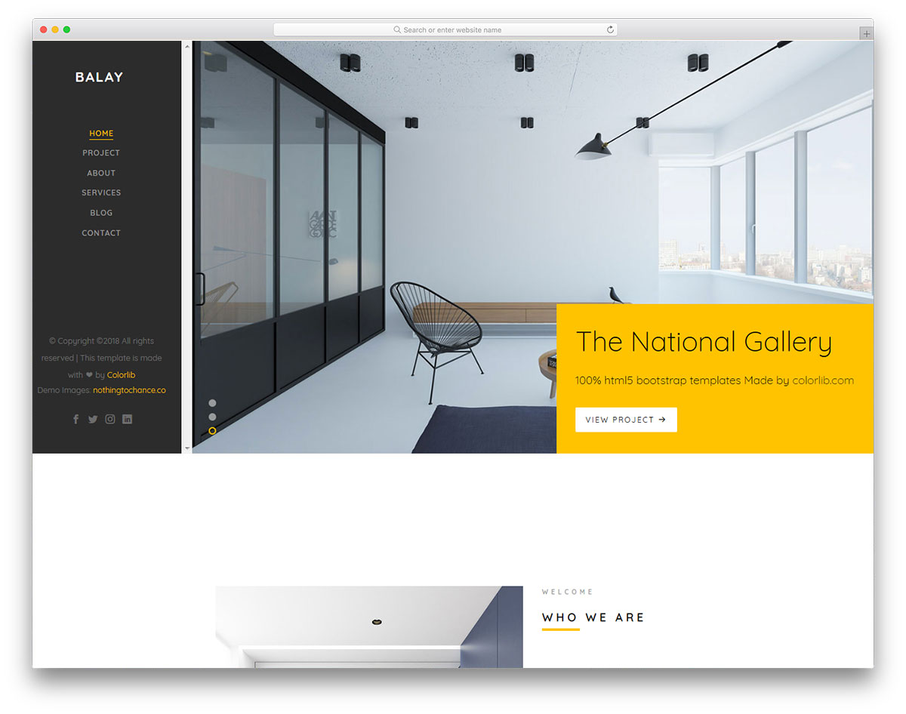
As an interior designer, a website is an absolute must. Now, you can make one without spending a dime, thanks to Balay. A free website template with a pretty distinct design, giving you a chance to stand out from the masses. You do not need to change much, as Balay works fantastically well out of the box.
Balay’s features are a sticky sidebar menu, slider, animated statistics, services section and blog. With the integrated Google Maps, you can also showcase your exact location and let everyone get in touch via the functional contact form.
More info / Download DemoPhilosophy
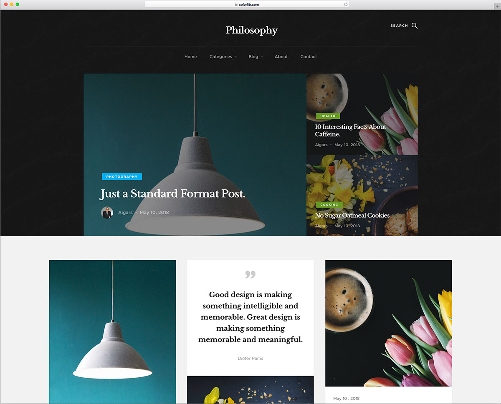
Nowadays, there are all sorts of tools that help you create a solid blog, and Philosophy is an excellent alternative. It rocks a masonry-style grid with a clean and modern design, calling for great content deliverability. There is a very good chance that you will want to use it as is since it works so damn well.
Moreover, Philosophy welcomes customization tweaks, too, for you to personalize it according to your liking. Some other specialties are hover effects, back to top button, footer, drop-down menu and overlay search. Also, create a compelling about page and go on an even more personal level with your fanbase.
More info / Download DemoInspire

It’s all about amazing and inspiring others with your services. To promote what you do online in the best possible way, start with Inspire. It is a free, Bootstrap-based website template with a great selection of features. Also, Inspire comes with different page layouts, so you do not have to build any from the ground up. Still, you can style the existing look if that’s what you feel is necessary.
On scroll content loading, testimonials slider, social icons, and video support are just a few of Inspire’s amenities. Hit the download button and enjoy it now.
More info / Download DemoFox

Kick-start your online education project with Fox. It is a free Bootstrap template that uses all the modern technologies that make for a spectacular end product. Whether you would like to build a university website or push online courses, Fox is ready for the challenge. It has a very eye-catchy design that will trigger every student’s attention.
Moreover, Fox rocks a slider, call-to-actions, animated statistics, parallax effect and request-a-quote form. Start on the right foot now and take Fox to your total advantage. Even though a free tool, you can still expect magic to happen.
More info / Download DemoPhotosen
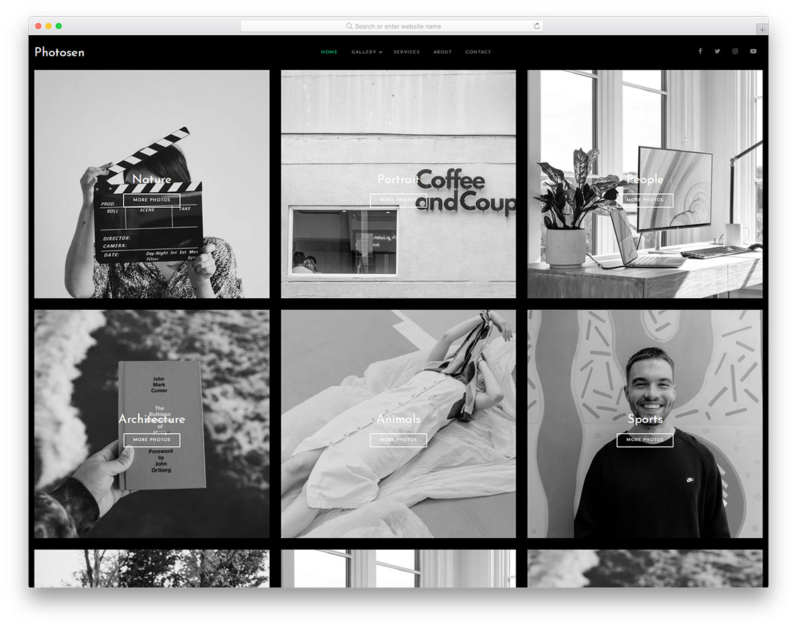
Photosen aims toward the photography industry, but other creatives can employ it successfully as well. It is a free template with a dark design that calls for a real eye-pleaser. From home to internal page layouts, it’s all at your fingertips, ready-made to take it to your benefit. You don’t need to change much, as Photosen works as is spectacularly well.
What’s more, Photosen is in harmony with all modern devices, web browsers and retina screens. It promises an unforgettable experience that will raise your potential sky-high. You do not even need to create a contact form and gallery; Photosen rocks it both by default.
More info / Download DemoNitro

Whether an agency or a freelancer, Nitro is a single-page website template for both. Simplicity and creativity are two of the core characteristics of this free tool. Keep in mind, even though you do not need to spend a dime, the website you bring to fruition will not be half-baked. Nitro is here to make an immediate difference.
Moreover, Nitro is an HTML template, so coding knowledge is necessary to work with it successfully. But that should not hold you back; Nitro sports a neat and organized code structure, so even a beginner will master it with ease.
More info / Download DemoFashion
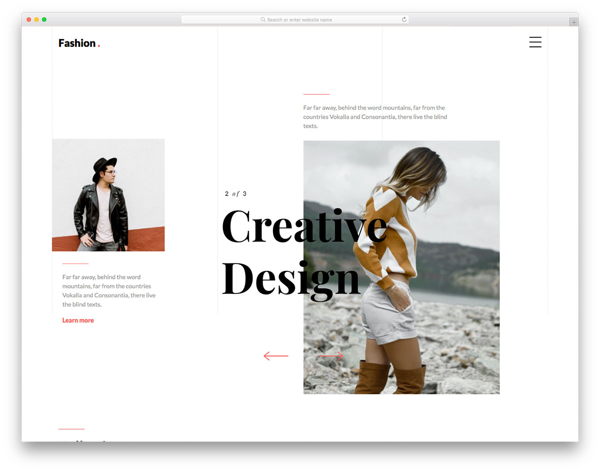
There is almost no need for an introduction when it come to Fashion. It’s the name that reveals it all. An all-around free Bootstrap template for the fashion industry with a twist. Fashion would be best for a brand, but you can use it for a boutique store, too.
The appearance of Fashion is very appealing to the eye, ensuring a great shopping experience. It is minimal and clean, so all the content and products pop beautifully. You can also use the integrated testimonials to build customer trust. Do not sit on it, rather put it into play right away.
More info / Download DemoBold

Bold is a flexible landing page template that can fit numerous intentions. Even though an HTML template that costs nothing, the end product will still be magnificent. The pleasant choice of colors, beautiful fonts, rounded edges, everything that Bold does, it does it with style. But you can also take it to the next level by introducing your creative touch.
Moreover, Bold is fully in-tune with all modern devices, web browsers and retina screens. Whether you would like to use it for a marketing campaign or even for a small business, Bold works for both flawlessly.
More info / Download DemoSpace

Personal websites and online portfolios, that’s what Space specializes in. The minimalist design ensures all the content comes into view in an appealing and attention-grabbing way. In other words, everyone will have a pleasant experience skimming through the material that you plan to advertise on your compelling website. Space is very easy to use, offering beginners and pros to start on the internet as quickly as possible. Keep in mind, this is an HTML template, so coding knowledge is necessary to turn Space into a flawlessly operating website.
The layout is mobile-ready, retina-friendly and cross-browser compatible. Imposing content loading, skillbars, testimonials slider, Google Maps and contact form are just some of the highlights of this marvelous free Bootstrap website template. Go ahead, download this tool now, and make it present your project on the world wide web professionally.
More info / Download DemoKraft
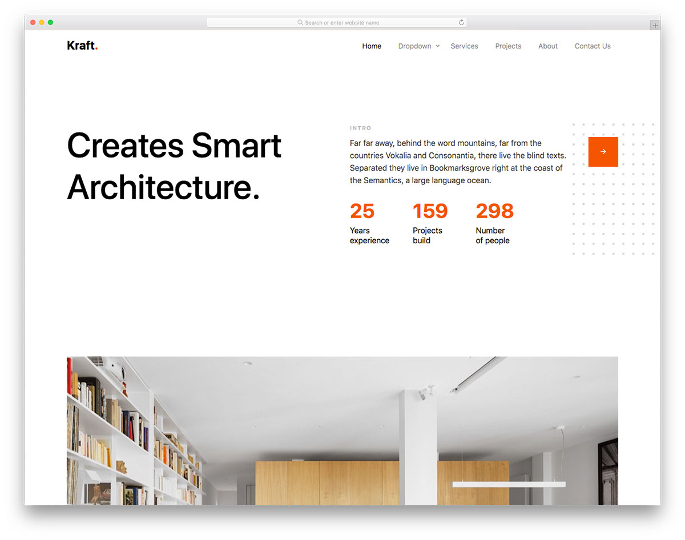
Crafting an architectural website with Kraft will be as easy as pie. First and foremost, there is no need to build the web design from the ground up. Go with the default appearance of Kraft or enrich it with your creative touches, whatever the case, Kraft promises and outcome that will turn heads. If simplicity works for you best, well then, what are you waiting for, Kraft is just a click away. Download it and put it to practice immediately. You can experience a speedy site realization for architects and architecture firms.
Kraft has many great traits that will do you well. Above the fold, it features text with animated statistics and some nice details. Instead of doing any of the fancy stuff, keep it minimal, as it will surely trigger everyone’s interest.
More info / Download DemoMegapod – Podcast Bootstrap Template
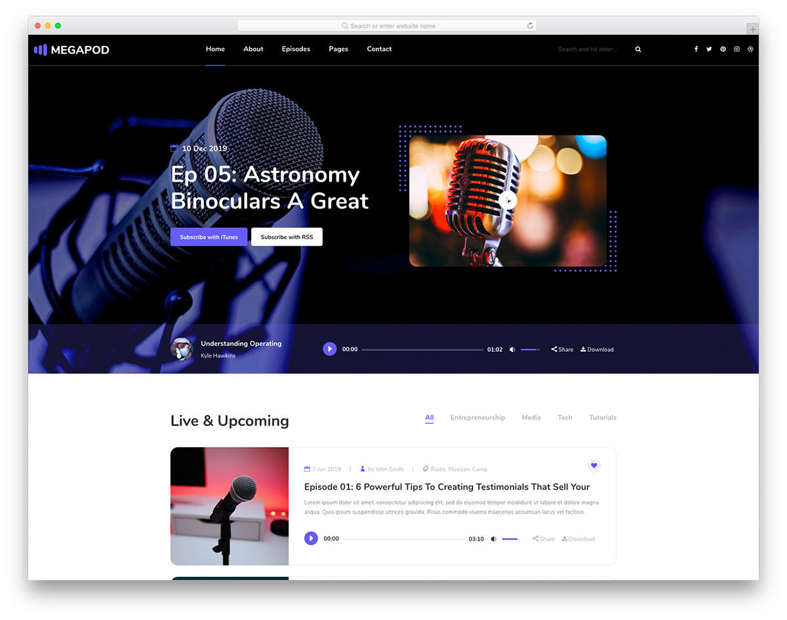
Megapod is a Bootstrap template without any hidden fees that is an ideal solution for podcasters. Even though a free site canvas, Megapod makes sure the outcome will be nothing short of spectacular. And this applies even if you decide to use it exactly as it comes out of the box. But you are also able to tweak and personalize it according to your taste. Instead of doing all the work from the ground up, you can now speed the process with Megapod and make a difference.
The layout of Megapod is entirely in tune with all modern devices and platforms. This ensures that the performance of your website will always be top-notch. It also has social media buttons, different internal pages, Google Maps and a working contact form. Start on the right track with Megapod now.
More info / Download DemoSalvation
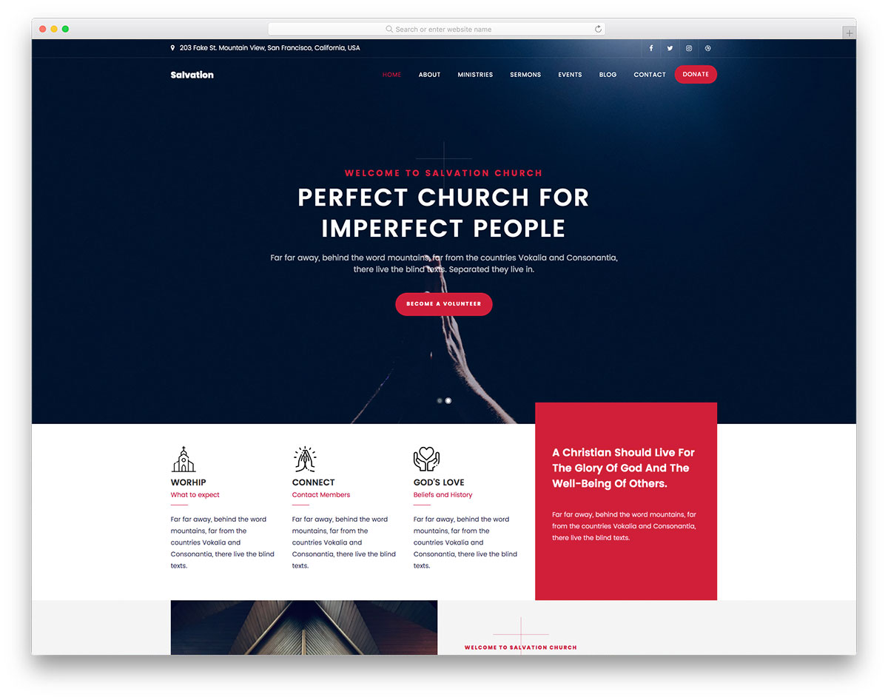
Churches and minisitres, Salvation is the outstanding free Bootstrap template that will assist you at establish an impactful online presence. With a well-thought-out website, you can reach even more people locally or globally. Let Salvation be a starting point to something grand that will help spread God’s word. Salvation comes with many great features and functions that will save you time and energy.
Keep in mind, this is an HTML template that does require coding knowledge to turn it into a functional website. However, you will find Salvation very organized and easy to work with, meaning, it is perfect both for beginners and professionals. Some of the highlights include full-screen slider, call-to-actions, on scroll content loading and testimonials, to name a few. Promote sermons, invite volunteers, start a blog and announce special events, all this and more with Salvation.
More info / Download DemoStaging

Interior designers as well as architects, Staging is the amazing free Bootstrap template that works great to establish a solid online presence. The web design is beautiful and modern, so you know the outcome will be spectacular. Moreover, you can also introduce your creative touch to Staging, making it follow your branding directions precisely. Moreover, Staging also takes care of device and browser compatibility out of the box for your convenience.
The features indeed are very many, which you can put into full effect easily. From slideshow and social media icons to testimonials, brand logo slider and more, you get all the necessary and then some. Needless to say, besides the well-thought-out home page, you also get multiple inner layouts to mix and match. Hit the download button now and start working on your top-notch business website.
More info / Download DemoTwoHearts
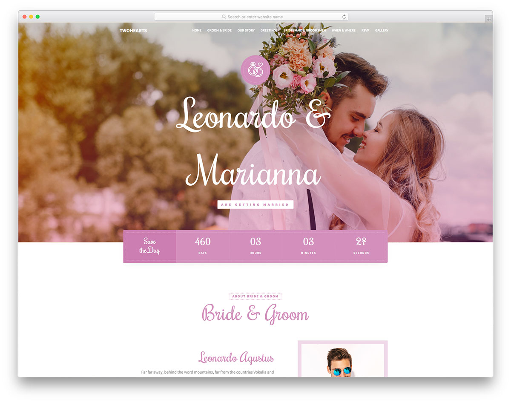
Creating a wedding website for a couple needs not start from the ground up. With TwoHearts, you can save time and effort, focusing only on the refining touches. It is a lovely site skin that everyone will adore. Also, TwoHearts rocks a one-page website structure, so you get to put everything on display in a mere few scrolls away. But it does not end here. Of course, you can fully decorate TwoHearts with your creativity, tweaking it with your signature style.
Working with TwoHearts will be a little breeze, thanks to its amazing organization and user-friendliness. A few of the highlights include a full-screen banner, parallax effect, countdown timer, sticky navbar and on scroll content loading. Google Maps and an RSVP form are also integrated into the design out of the box.
More info / Download DemoHnBand
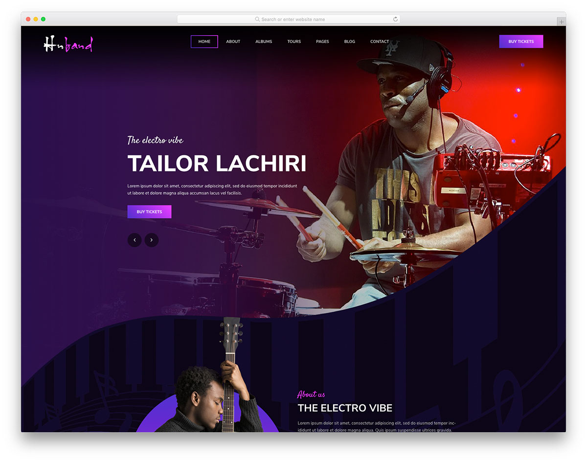
Artists, bands, musicians, everyone is welcome to benefit from the excellent HnBand. It is a free website template based on the well-liked Bootstrap Framework with heaps of great features and functions. First thing’s first, HnBand rocks a compelling dark design that will inspire everyone who visits your website. You are free to use this site skin as is, but you can also put in the next gear by introducing improvements and adjustments – it’s all really up to you. For as long as you keep the footer copyright intact, you can make your version of HnBand entirely.
The layout is 100% fluid, working on smartphones, tablets and desktops. It is also cross-browser compatible and retina screen-ready. Share your songs, your discography, announce tour dates, even begin writing a blog, whatever, HnBand is here to satisfy your needs as a musician or a band.
More info / Download DemoCourses – Online Course Template
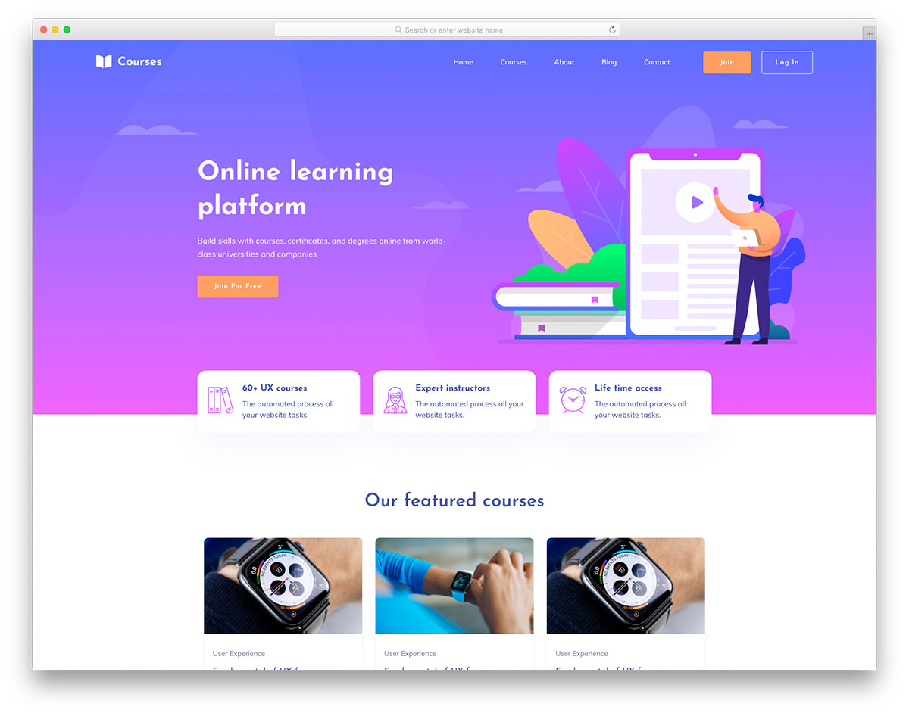
Needless to say, Courses is a nifty solution for building yourself an online education platform. It is a free template based on the well-liked Bootstrap Framework that offers heaps of great features. First and foremost, Courses is in tune with all modern devices, web browsers and retina screens. Once your potential student lands on your website, he or she will have a blast enjoying your content and signing up.
The lovely choice of colors, the modern looks, the flexibility, everything you see Courses using is eye-catchy and sophisticated. While Courses works flawlessly as is, you can take things a step further by customizing it, too. The options you have are numerous; you just need to keep footer copyright intact for as long as you want to use the template for free.
More info / Download DemoVideograph

Videographers and filmmakers will be the ideal clientele of Videograph. This remarkable and very eye-catchy free Bootstrap template comes with a flexible and fluid layout. The design uses all the latest technologies, making sure the outcome operates on all devices and web browsers seamlessly. And if you are particularly looking for a theme with a dark look, Videograph is the one.
Moreover, the tool includes all sorts of nifty features and functions for you to benefit form. Text slider, hover effects, drop-down menu and social media icons are just some of the very many goodies. In the bundle, you also get Google Maps and a working contact form, so you do not need to do it yourself. If you are ready to create a solid online portfolio for your videography business, make it happen with the one and only, Videograph.
More info / Download DemoAppli – Bootstrap Template
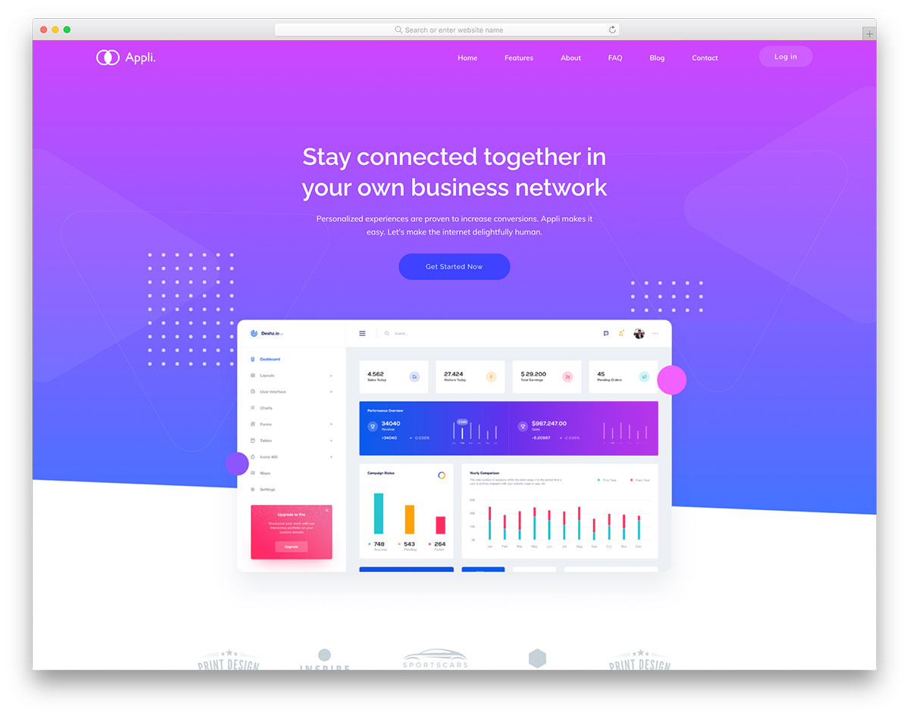
Promoting your application on the web start with a proper website. Thanks to Appli, you can now bring one into being without the need to begin the process from square one. Instead, Appli offers you to take the design and all its amenities to your total advantage. With this in mind, you can work with the page skin exactly as it comes out of the box. The default settings are very appealing to the eye, but you can always introduce your creative touch to it.
As for the features, you get a text slider, call-to-actions, sticky navbar, back to top button, video support and testimonials. Use the latter for building customer loyalty and raise your potential to new heights. Different inner pages, including blog and contact section, are also part of the kit.
More info / Download DemoTasteit
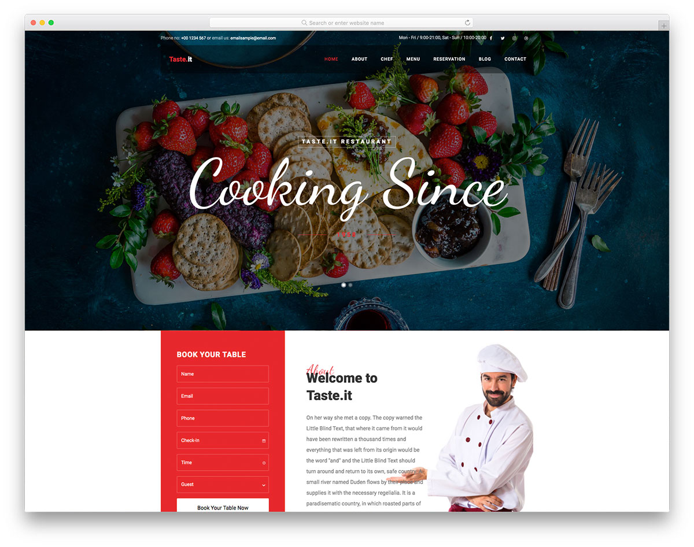
Restaurants, heck, any food businesses in fact, can greatly benefit from Tasteit. First and foremost, Tasteit is very tasty looking, ensuring an excellent experience across all devices. It is a Bootstrap Framework template that follows all the latest trends and regulations. Tasteit is 100% responsive, retina-ready and cross-browser compatible. The code is also neatly structured, so everyone will get the most out of it. Still, if you fancy, you can easily employ Tasteit exactly as is.
The full-screen slider above the fold offers you to trigger everyone’s attention with mouthwatering imagery. Furthermore, activate the online book-a-table form, showcase your delicious food, introduce chefs and more, all this with Tasteit. The available predefined sections and elements are available to start making some noise immediately. You can also share news and special deals and showcase the exact location of your business with Google Maps.
More info / Download DemoBurger
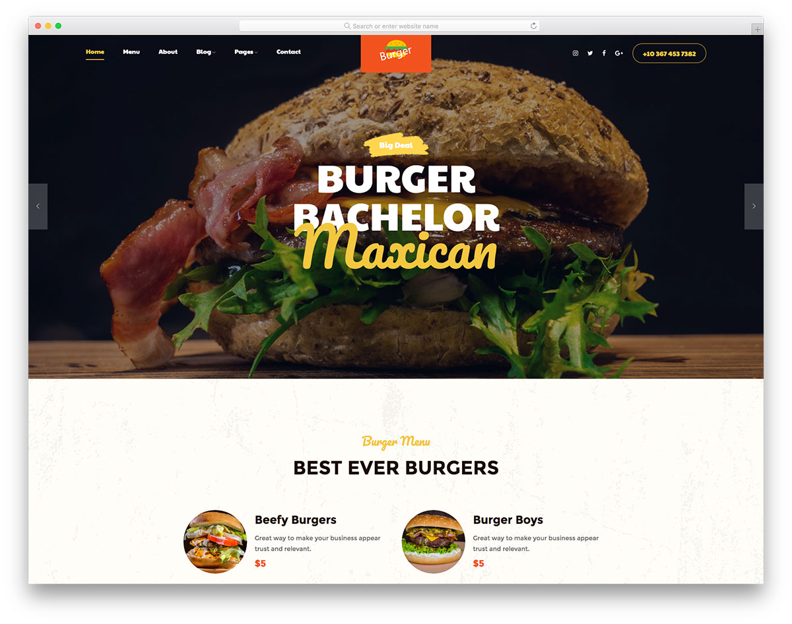
Burger is a striking and free Bootstrap template for fast-foods, restaurants and other food businesses. If you are on the hunt for striking web design, let Burger do its thing. Instead of doing all the work from scratch, you can now make it happen with the use of Burger and save yourself plenty of time and energy. Of course, this is still just an HTML template that requires you to know how to code to turn it into a functional website.
Other specialties of Burger are slider, sticky navigation, food menu, testimonials, video support and blog section. In addition to that, Burger also comes with a working contact form and Google Maps. Grab the template now and start on the internet with a bang. It is all set and ready to rock and roll.
More info / Download DemoEventz
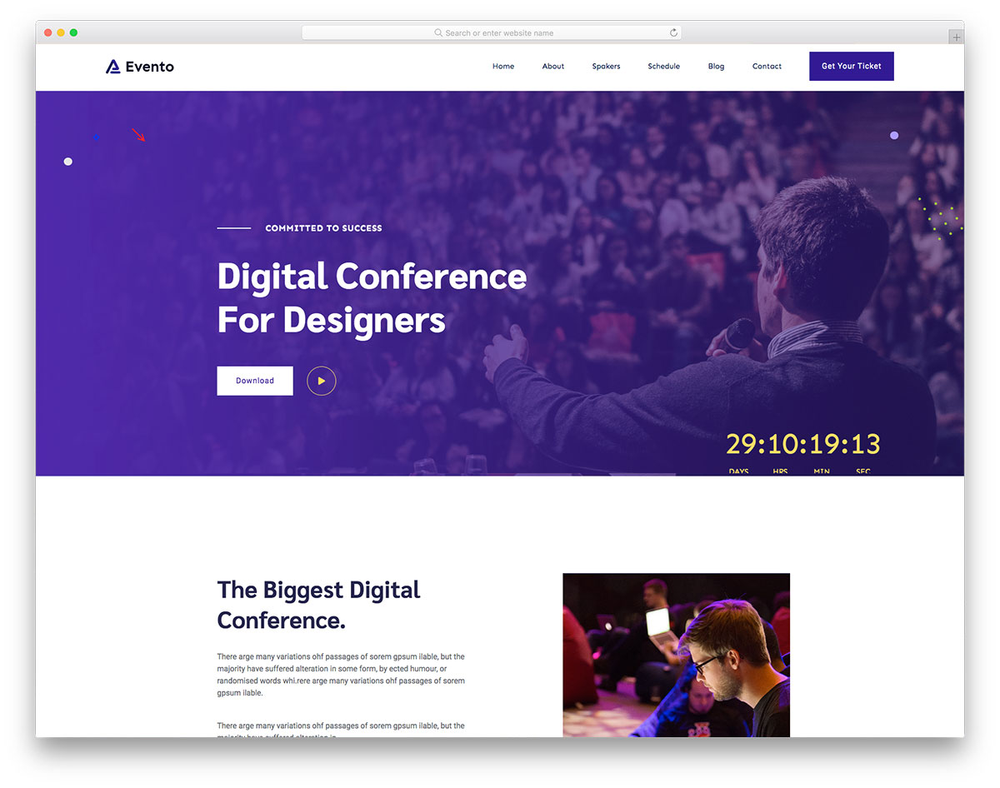
There is almost no need to write about Eventz, as it reveals it all with the name. It is a free Bootstrap template that works ideally for events, conferences, meetups, forums, you name it. Eventz is very versatile and flexible to fit numerous objectives and tastes easily. Of course, you can also entirely modify the out of the box look or stick to it as is – the choice is yours. It just shows that Eventz is capable of many things for your convenience.
Moreover, this site canvas comes with quite some features and functions. From countdown timer and sticky menu to back to top button, event schedule and pricing plans, you get it all and then some. Instead of doing the work from scratch, pick Eventz and go from there.
More info / Download DemoEdustage
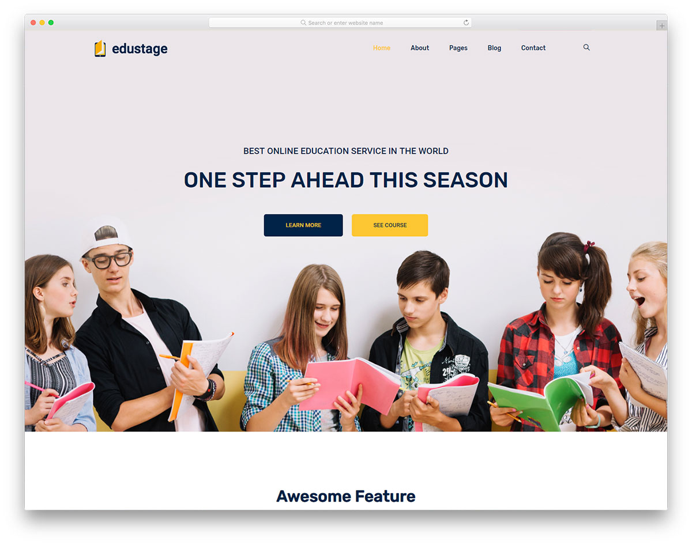
Edustage is a remarkable and modern free Bootstrap template that fits anything education-related. It is flexible enough to work for schools and universities, as well as promote online classes and whatnot. Also, Edustage has a somewhat simplistic look, making sure it adapts to different intentions out of the box. Still, if you would like to brand and personalize the default settings, you can do that, too. The options are very many when it comes to Edustage, so make sure you take it to your total advantage.
Moreover, Edustage uses only the latest technologies, making sure the performance is always of the highest degree. In other words, your website will operate flawlessly on mobile and desktop devices, retina screens and popular web browsers alike. Start on the internet professionally with an educational website, thanks to Edustage.
More info / Download DemoImagine

There are various ways of how to promote your business on the internet, and website is one of the more promising one. With Imagine, you can now bring into being a business site that rocks a one-page structure. Meaning, instead of letting potential clients jump from page to page to learn about you, they can get all the information in a mere scrolls away. Very convenient if you will.
The creativity and minimalist look of Imagine also makes sure to trigger everyone’s interest right from the get-go. Sticky navigation, on scroll content loading, team section, testimonials and functional contact form are just a few of the goodies that Imagine treats you to. Enjoy yourself a quick-start to something new and impactful and grow your project to new heights with a well-thought-out website. Imagine is here and ready for you to employ it without the need to spend a dime.
More info / Download DemoRezume
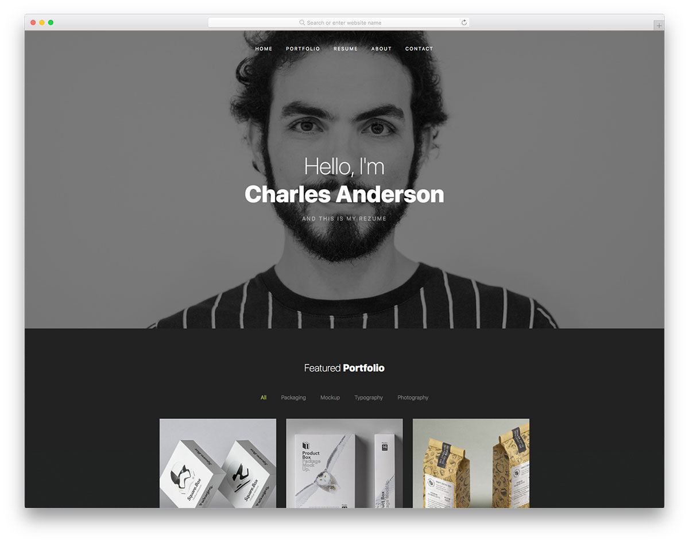
Rezume is a striking free Bootstrap website template for personal websites, online portfolios, CVs and resumes. It is a mixture of specialties that will get you moving in the right direction immediately. After all, you are free to employ the tool out of the box and benefit from its impactful default structuring. But you are also welcome to introduce your creative touch and make Rezume your own.
The bold and dark look of this web design will capture everyone’s curiosity without a shadow of a doubt. Also, above the fold, Rezume rocks a full-screen background that you can use for inserting any image you fancy. Some other specialties include filterable portfolio, floating navigation, client testimonials and social media icons, to name a few. Stand out from the masses with a terrific online presence that will help push your business over and beyond.
More info / Download DemoAllFood

AllFood is a free Bootstrap template for all types of food businesses. However, a restaurant will find the best use of it out of the box. The cleanness and creativity of AllFood make sure to create a striking experience for every visitor. AllFood is also perfectly in tune with all modern devices and web browsers for a top-notch performance at all times. No need to worry about the technicalties, AllFood rocks it by default.
Every AllFood user will also benefit from all the very many features that it brings to the table. Slider, call-to-actions, filterable portfolio, social media icons and sticky navigation, it is all part of AllFood. Blog sections, Google Maps and a working contact form are also available and ready-made for instant integration. Make your dishes and your food place shine online with AllFood now.
More info / Download DemoBrber

Barbershops and other types of hair and grooming salons for men (and women), Brber is a web design to investigate further. If you lack a solid online presence or you are just starting out, help yourself with a predefined tool and enjoy a superb outcome sooner rather than later. You might find Brber suiting your needs perfectly as is and if that’s the case, only a few branding tweaks are necessary to start moving in the right direction.
Brber is 100% mobile-ready, cross-browser compatible, retina-friendly and lightweight. In short, the performance with Brber is always on point, guaranteeing happy visitors and potential clients. Showcase pricing, put on display testimonials, start a blog, create a gallery, you name it, with Brber a lot is possible. Keep in mind, it is an HTML template that does require coding knowledge to turn it into a functional and impactful website.
More info / Download DemoDJoz
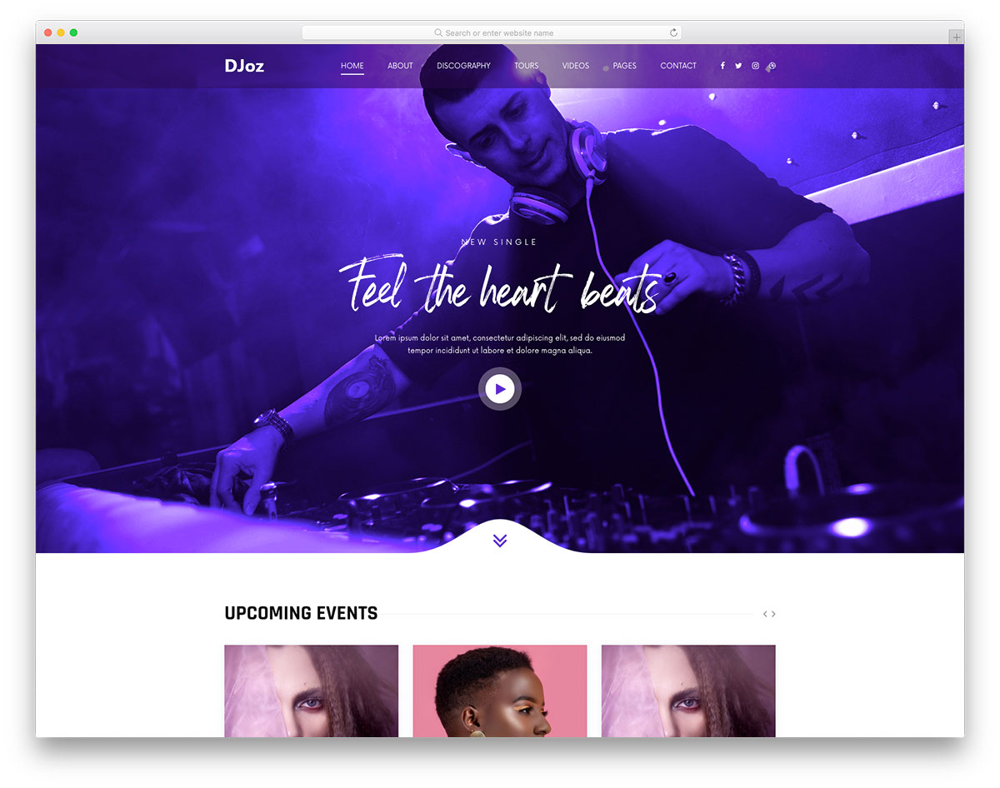
DJoz is a Bootstrap template that does not come with any hidden fees. Hence the name, you will find it ideal for DJs, as well as other musicians, heck, even bands. After all, while you can use it as is, you can also tailor DJoz to your liking at free will. Still, DJoz’s design is very modern and impactful, working fantastically well out of the box. It is also fully in harmony with mobile devices, web browsers and retina screens.
Massive banner, transparent header, video support, social icons and drop-down menu are just some of the highlights that decorate the outstanding DJoz. Different inner page layouts, Google Maps and a contact form are also at your disposal, readily available to put them into practice. Take your music project to new extremes with DJoz now.
More info / Download DemoLawfirm

You can now establish a solid online presence for your law firm with, as the name implies, Lawfirm. This free template is based on Bootstrap Framework, and practices all the latest technologies. Your website’s performance will be striking all the time, regardless of the device and platform the potential client uses. Lawfirm also brings to the table a masterful appearance that will help take your professionalism to the next level.
Moreover, there are numerous amenities that come part of the bundle for you to save time and effort. On scroll content loading, animated statistics, testimonials and practice areas section are all part of the Lawfirm kit. You can use the included blog pages, too, and introduce a rewarding content marketing strategy. Even as a beginner web developer, you will find great use of Lawfirm due to its neat structure.
More info / Download DemoHiroto

For a hotel, a boutique one in particular, Hiroto is the free website template to consider. To be frank, you can practice utilizing this impressive web design for all sorts of hotels and other accommodation businesses. In other words, there is no need to feel limited in any way, shape or form. Go entirely against the grain if you want or stick to the version that live demo represents, it is entirely up to you.
In the fantastic kit of practical features and functions, you will find heaps more besides “just” the design part. Hiroto comes with many great features, like full responsiveness, drop-down menu, Google Maps integration and a contact form. Still, this is not the entire portion of amenities that Hiroto has in store for you. Sort out your presence on the internet with Hiroto and bring in more customers to book a room.
More info / Download DemoHepta

If you are in the tourism space, kicking off an online website for your projects happens swifter with a free Bootstrap template. Hepta is an excellent alternative with a modern and creative design that immediately captures everyone’s interest. Above the fold, Hepta rocks a full-screen banner with text and CTA. Instead of starting scrolling down, a user can hit the scroll down button and begin with the adventure.
Moreover, there are multiple other amenities that Hepta treats you to. Full-screen menu overlay, on scroll content loading, slider, testimonials and social media icons are just a few of the specialties that are included in the Hepta kit. The layout is also 100% fluid and flexible, adapting to all devices smoothly as butter. Start on the internet with your travel agency with a bang and make an immediate difference.
More info / Download DemoUnfold
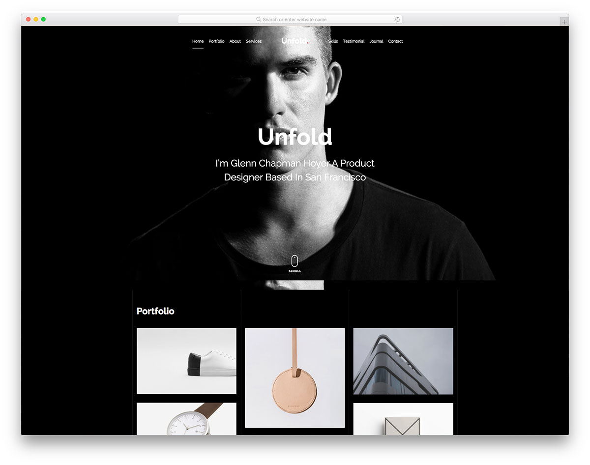
Building a portfolio that will wow every visitor and potential client becomes a piece of cake with Unfold. This free Bootstrap template is a pack of goodies that will set you apart right from the get-go. Of course, you can utilize Unfold out of the box precisely, or you can take things a step further a personalize it accordingly. The dark look of Unfold guarantees a strong and impactful first impression that will make everyone want to start scrolling for more. With Unfold, you will present yourself in the best possible light.
Some other specialties of Unfold include parallax effect, content reveal feature, logo slider, animated statistics and a functional contact form. Keep in mind, Unfold works great for establishing a one-page portfolio website. Get ready, hit the download button and enjoy this masterpiece of a site canvas.
More info / Download DemoWed
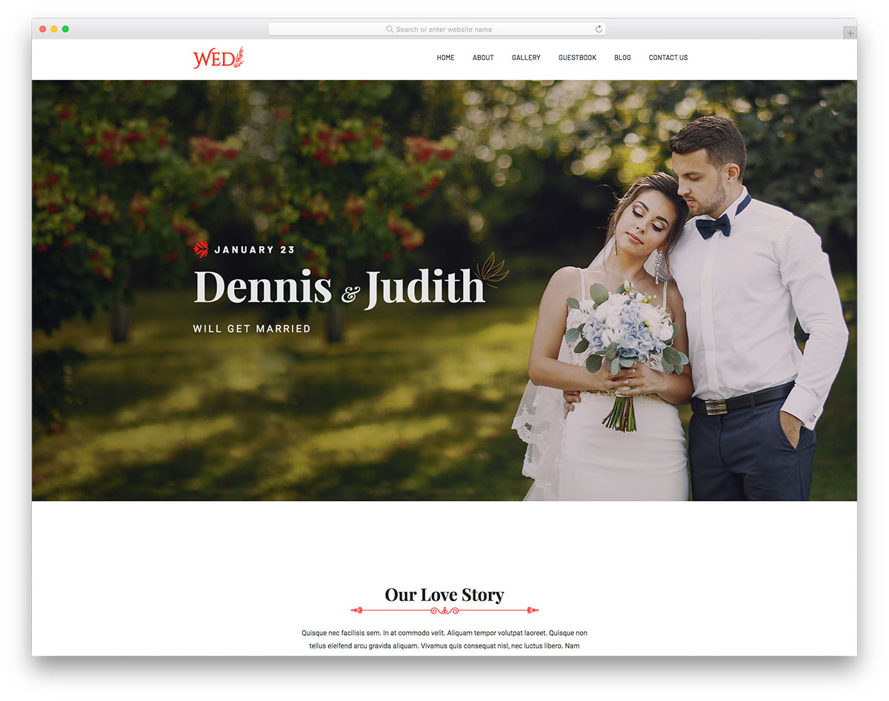
For weddings, hence the name, Wed is the free Bootstrap template that will do the trick. This remarkable and eye-catchy design follows all the latest trends and regulations of the modern web, making sure the outcome operates smoothly across all devices and platforms. Instead of building the entire page from the ground up, you can now benefit from the jaw-dropping Wed. Come out with a lovely website that will bring smiles to all your family members and friends’ faces. Not just that, but why wouldn’t you want to go against the grain and use a website as a wedding invitation instead of sending out cards?
Wed rocks all the necessary to get you started immediately. You can present your love story, all the information about the wedding event and all sorts of other stuff in the best possible light. There is also an RSVP form neatly integrated into the design for your convenience.
More info / Download DemoPonigym

When looking for a free Bootstrap website template for a gym or fitness facility, you came to the right place. Ponigym is a solution that provides a remarkable design for your nifty online presence. With all the very many predefined front and internal pages, you quickly mix and match the right stuff that ends up creating a top-notch outcome. Of course, you can also fine-tune and modify Ponigym so it fits your branding directions precisely.
Moreover, Ponigym includes various practical features and functions that will place you right on top. From slider and call-to-actions to weekly classes timetable, trainer presentation and a contact form, Ponigym rocks it all and plenty more. With the tool, you can now speed things up and have a page all done and ready to attract new customers sooner rather than later.
More info / Download DemoJobboard
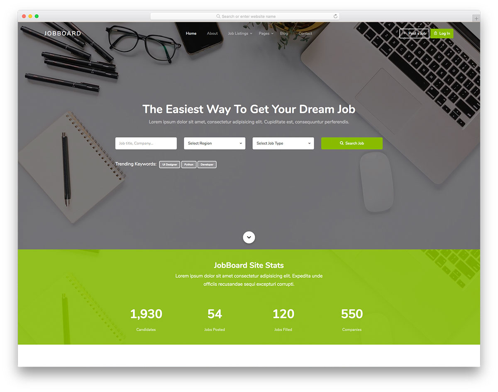
Jobboard – hence the name – is a free Bootsrap template for creating a job board and listings web platform. For creating an online hub where employers and employees will gather, Jobboard is it. You can also utilize the tool for creating both niche or generabl job boards, even such for freelancers exclusively. The options are very many once you unbox the Jobboard kit. And it comes with no hidden charges, readily available to put it into practice out of the box.
The layout of Jobboard is 100% mobile-ready, cross-browser compatible and retina-friendly. It includes animations, drop-down menu, testimonials slider, social media icons and post a job form. Last but not least, sign up and login forms are also part of the deal for your convenience. Make the most out of it and create a successful online job board with Jobboard today.
More info / Download DemoNews
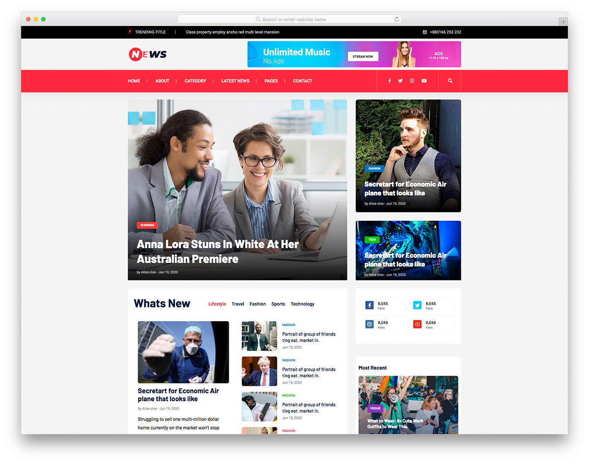
News is a free Bootstrap template that suits online magazines and newspaper sites ideally. This site canvas has a clean and modern design, making sure all the content comes into view distraction-free. You can, of course, employ News exactly as it comes out of the box, but tweaking it and personalizing the default settings is also possible. In short, do your thing and tailor News to the niche or industry you would like to cover. Still, going general works for News, too.
Some of the features of News are sticky navigation, back to top button, video support, carousels and social media icons. The layout of this free template is 100% mobile-ready and cross-browser compatible for smooth performance. Start your online news project now without the need to build everything from scratch.
More info / Download DemoMyPhotography

If you are a photographer who is looking for a free Bootstrap template with a dark layout, MyPhotography is the way to go. This bold and impactful alternative will help you get the ball rolling sooner rather than later. Even though MyPhotography is a free solution, it still comes with heaps of features. First and foremost, your website will follow all the latest trends and regulations of the modern web. The tool is lightweight and easy-to-use, too.
Moreover, MyPhotography sports floating menu, call-to-actions, testimonials and blog section. In the bundle, you will also find Google Maps and a working contact form. If you are ready to expand your reach and raise your potential, do yourself a favor and pick MyPhotography. It is a site skin that calls for a striking outcome.
More info / Download DemoCounselor
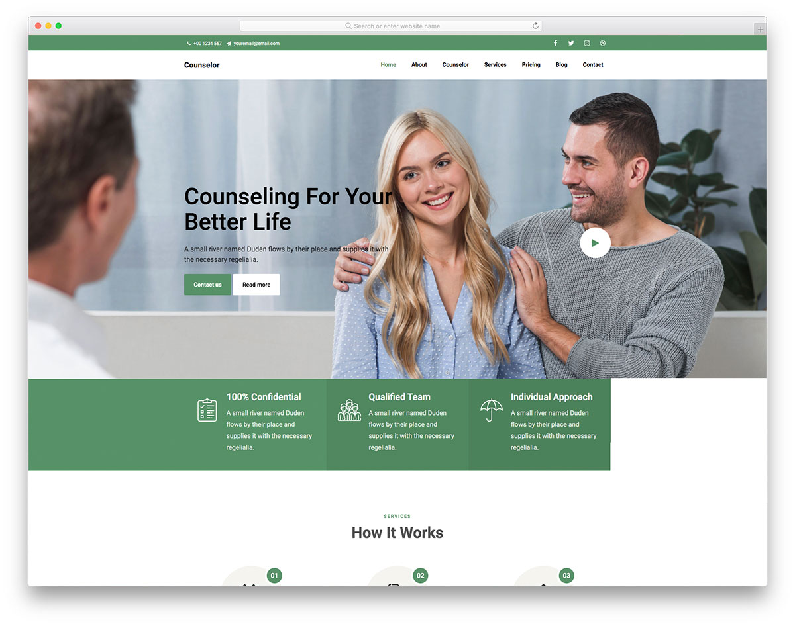
For everyone offering counseling services, hence the name, Counselor is the free Bootstrap template that will do the trick. With its clean and professional appearance, you will want to utilize Counselor exactly as it comes out of the box. It promises a spectacular website that will help you win over even more potential clients. Please understand, if you would like to perform customization tweaks, you can do that, too. Note: you only need to keep the footer copyright intact.
Counselor also includes loads of practical features that will do you well. From big banner above the fold and video support to on scroll content loading, testimonials slider and pricing packages, it is all in the Counselor kit. You can also start a blog and introduce a content marketing strategy to your thriving business.
More info / Download DemoDogger

Dogger is a free Bootstrap template that suits dog care ideally. However, you can also tailor the tool to other animals or general pet grooming and training services. Due to the clean, creative and modern appearance, Dogger has no trouble catering to your needs and regulations out of the box. The template also practices all the current trends, ensuring you a website that operates without a hitch across all devices and browsing platforms.
Some of the specialties of Dogger are sticky navigation, on scroll content loading, multi-level drop-down menu, pricing tables, accordions and more. You can also start a blog where you share tips and tricks on how to keep that cute little ball of fur in the best possible health. Also, Dogger works excellently as a one-page website template, displaying every necessary detail on a single page.
More info / Download DemoFashi

When setting up an eCommerce website for apparel, you can speed things up with Fashi. This free Bootstrap template rocks a trendy and enticing design that calls for a nifty outcome. Not only does Fashi sport a beautiful look, but it also comes with quite a bunch of features that will do you well. Have in mind, Fashi is an HTML template that does require coding knowledge to turn it into a functional online store.
The design is 100% responsive, cross-browser compatible and retina-ready. Fashi also includes a slider, call-to-action buttons, social media icons, all the necessary inner shopping pages and a blog. Last but not least, there is also an integration of Google Maps and a working contact form for you to save extra time. Start strong online with the help form Fashi now.
More info / Download DemoActivitar
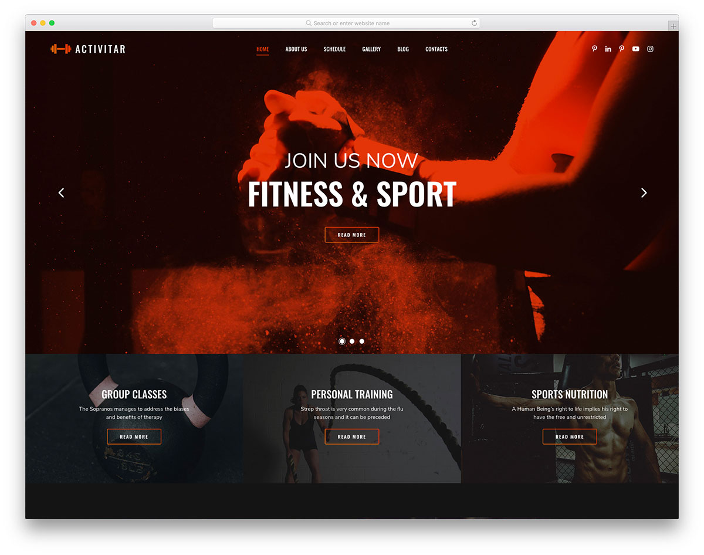
Gyms, fitness centers and personal trainers, Activitar is the killer free Bootstrap template to take into consideration. If you would like to build an impactful and engaging online presence, make it happen with the use of Activitar. The bold and dark appearance of this site canvas will spark everyone’s curiosity without breaking a single drop of sweat. Not just that, you can freey employ the tool out of the box, as it is too good to be true. But if you would like to brand it, you can do that, too.
The features and functions of Activitar are many, making sure the outcome is as top-notch as possible. From full-width slider and social media buttons to hover effects, weekly classes timetable and pricing, Activitar comes with all the mentioned and an array more.
More info / Download DemoMeal
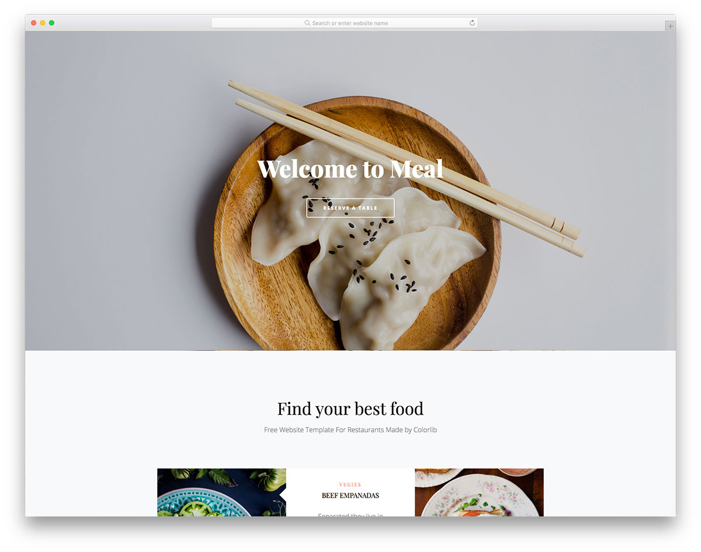
Meal is an enticing, modern and very palatable free Bootstrap template for restaurants and other food businesses. With its excellent one-page structuring, you can display all the images, food menu and other whatnots one a single page. Save your customers time when learning more about your business and get them to reserve a table quickly. With Meal, you will surely establish a top-notch online presence that will turn heads.
The layout of Meal is fluid, adjusting to smartphones, tablets and desktops instantaneously. It is also cross-browser compatible and in tune with retina screens. Other goodies include a full-screen banner, parallax effect, call-to-action buttons, sticky header and on scroll content loading. There is also a working contact form and Google Maps integrated neatly into the Meal’s beautiful design. Establish a banging restaurant page with Meal now.
More info / Download DemoFoodeiBlog

Barely any words are necessary when it comes to FoodeiBlog. After all, the name of this free Bootstrap template reveals it all right away. It is a modern, clean and very appealing to the eye site canvas for building a blog for anything food and recipes-related. In addition to that, you can also establish a review blog or just about anything else related to food, restaurants, you name it.
FoodeiBlog is easy to use, as it comes well-structured, making sure even beginners get the most out of it. Of course, this is an HTML template that does require coding knowledge to turn it into a functional blog. Moreover, FoodeiBlog ensures complete compatibility with all modern web browsers, mobile devices and retina screens. A few extra goodies include social media icons, sliders, subscription pop-up and a functional contact form.
More info / Download DemoDeerHost
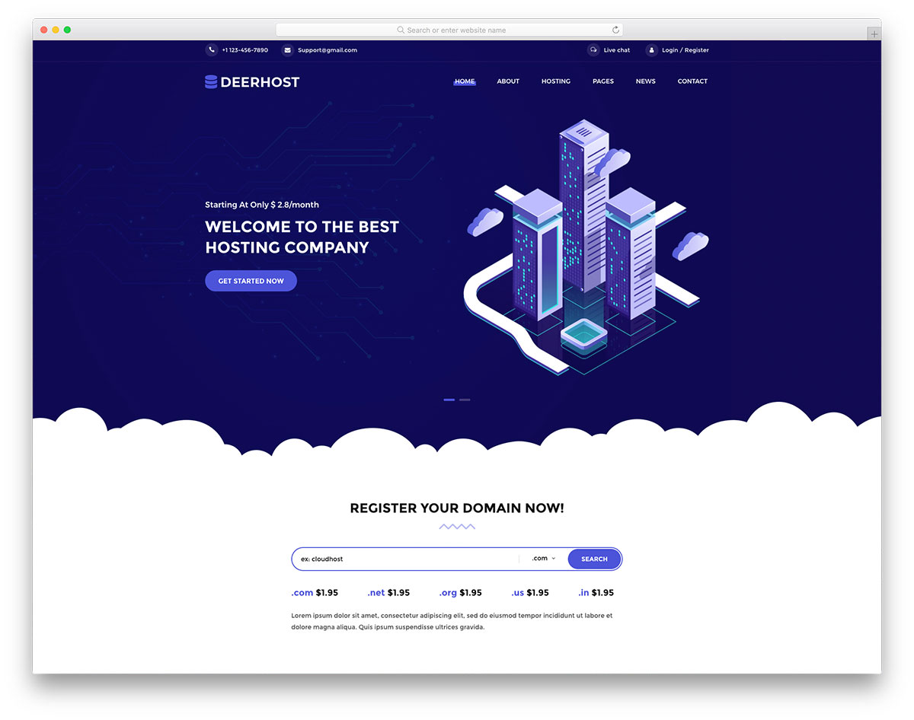
If you are particularly searching for a free Bootstrap template that suits hosting companies and domain registrars, you better take a peek at DeerHost. It is a spectacular solution that will get you going in close to no time. After all, DeerHost is free of charge and comes with an array of goodies that will do you well. From various predefined page layouts to very many features and functions, DeerHost is great pick when bringing into being a first-clas website for a hosting firm.
Moreover, DeerHost also sports all the modern web and tech trends to ensure excellent performance and stability. Silder, pricing plans, animated statistics, social media buttons, Google Maps and a contact form are just a few of the treats that come with DeerHost pack. Take action and put DeerHost into practice for a remarkable outcome.
More info / Download DemoStartupBusiness

Startups and agencies will find StartupBusiness, a free Bootstrap template, of great usage. With its clean and sophisticated appearance, StartupBusiness makes sure that the end product serves the purpose by delivering a terrific experience. Without a shadow of a doubt, you can utilize StartupBusiness for the complete presentation of your business online, as it takes care of all the necessary and then some. From home to different inner pages, StartupBusiness offers you an array of ready-made material that will get the ball rolling immediately.
Cool split-screen slider above the fold, back to top button, animated skillbars, testimonials, sticky header, you name it, StartupBusiness makes sure to deliver it. You can also start a blog with the included pages and introduce strategic content marketing to grow your business to new heights.
More info / Download DemoeStore
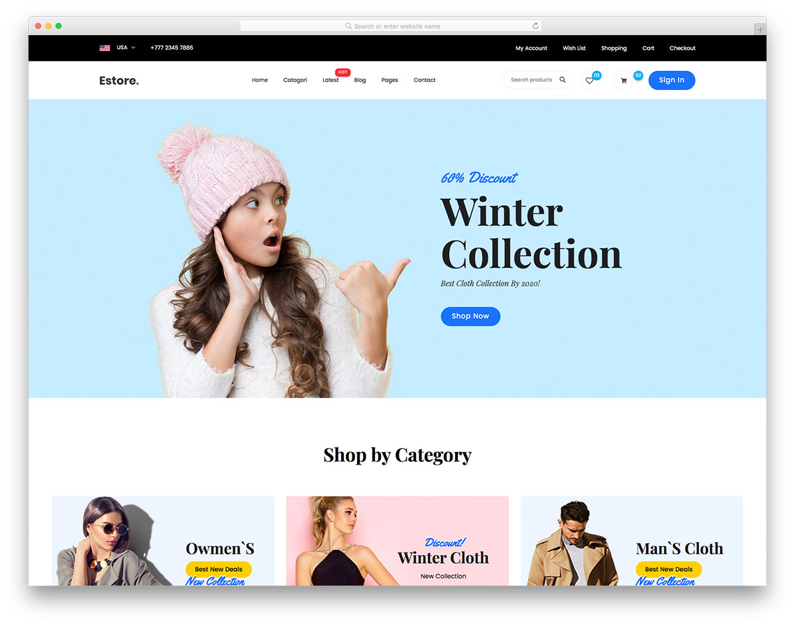
If you are searching for a more simplistic free Bootstrap template for an online store, hence the name, eStore will surely do the trick. It is a tool with a clear design, making sure all your products come into view beautifully. In short, the shopping experience will always be of the highest degree when you decide to build a website using eStore. Even when it comes to mobile devices, eStore adjusts to them with ease. After all, it is a Bootstrap Framework template, ensuring complete flexibility and extendability.
Moreover, eStore also comes with an array of page layouts that will help you save additional time. There is also a blog section for announcing new product drops, as well as for incorporation content marketing. Last but not least, the contact page contains both Google Maps and a working form.
More info / Download DemoSeos
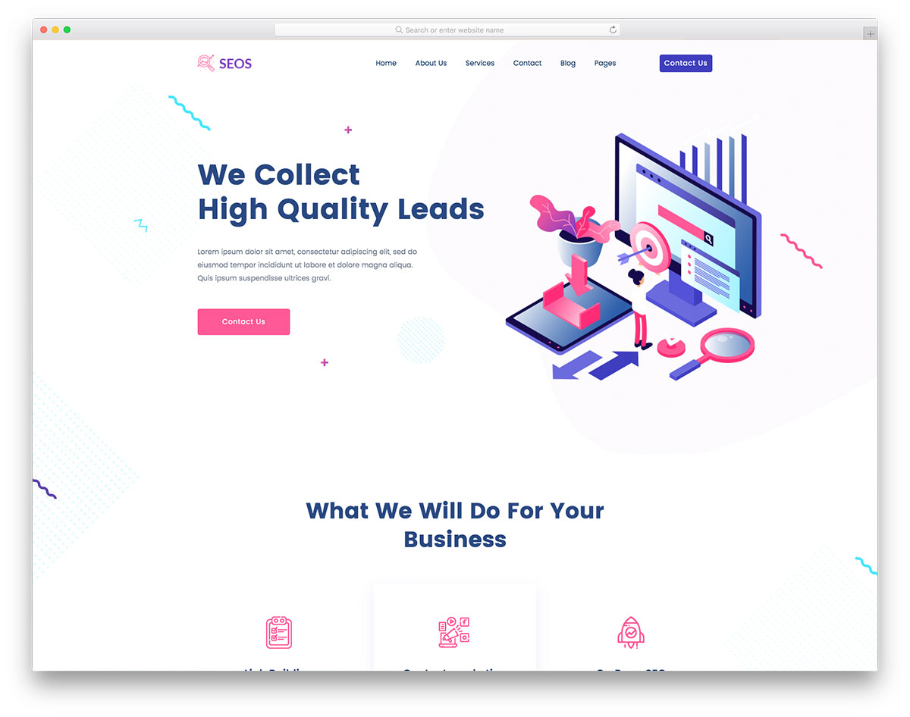
Marketing agencies, especially those who specialize in SEO, Seos is the free Bootstrap website template that will do the trick. If you need to sort out a killer web presence for your business, make it happen with Seos now. Instead of starting from the ground up, you can now employ the powerful and practical Seos and call it a day. Keep in mind, this is an HTML template, requiring you to know how to code to turn it into a fully active page.
Seos comes with a responsive design, ensuring a smooth performance across all devices and platforms. You will also find quite some features and functions that will get you going in no time. From the drop-down menu and sticky navigation to hover effects, pricing tables and testimonials slider, it is all at your fingertips, plus a horde more.
More info / Download DemoAppy

The era, we live in, sure is a mobile-first one. Or maybe we are not 100% percent there yet but are steadily approaching it. More and more firms are launching new applications that help others to manage their lives easier or for pure entertainment. If you are an app owner, Appy is a great free Bootstrap template for you to expand your reach and grab the attention of more folks in need of your product.
Appy is a responsive and retina ready template with great performance and SEO-friendly coding. Smooth transitions, nice selection of colors and overall contemporary web design are prepared to intrigue every single new and returning visitor. Move them through your funnel and little do they now, they are already downloading the application, eager to try it out.
More info / Download DemoApart
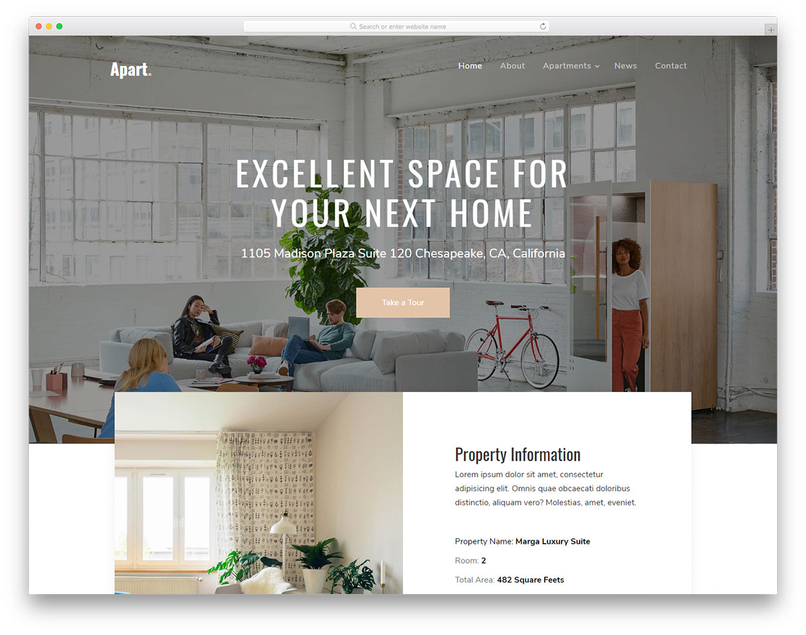
Apart is a modern free Bootstrap template for – hence the name – real estate and apartment rental agencies. With the cleanness and sophistication, you will surely spark everyone’s curiosity without a sweat. Introduce professional photography of the places you have up for rent or sale and win them over. With a well-thought-out website, you instantly raise your potential, showing everyone your professionalism. Let Apart take care of the web design of your nifty online presence.
Apart comes with a massive banner, parallax effect, drop-down menu, on scroll content load, testimonials and newsletter subscription form. You will also find social media icons, a news section and a working contact form. Start on the right track with Apart and make a difference once and for all. You are closer than ever to realizing a page that will push your apartments sophistically.
More info / Download DemoAznews

Aznews is a free Bootstrap template that you can use for building online magazines and news pages. This clean, modern and professional site canvas offers you a nifty design for presenting your compelling content to the world. Aznews works fantastically well out of the box, however, you can also style it according to your needs and branding regulations. Moreover, Aznews works for just about any niche and industry you would like to dive in. Not just that, you can either focus on a specific topic or go general, Aznews handles it all with ease.
What’s more, Aznews is also 100% mobile-ready and cross-browser compatible. Offer an excellent reading experience across all devices, whether your users are at home or on the go. Needless to say, skip starting a new project from scratch when you have Aznews.
More info / Download DemoAppco

Appco, as the name suggests, is a free Bootstrap template that works ideally for app presentation. Be it mobile, desktop or web app, with Appco, you can establish a sophisticated online presence that will turn heads. With a strong attentional to detail, professionalism and creativness, Appco makes sure to capture everyone’s attention right from the get-go. You are all set to start with the right foot forward, creating a page that will take your application to new heights.
Some of the goodies of Appco are sticky navigation, back to top button, drop-down menu, pricing plans and screenshot slider, to name a few. Additionally, you get testimonials, call-to-action buttons and a working contact form, too. Now you know where to start for a dope outcome that will move mountains of the app industry.
More info / Download DemoElit

Photographers and other creative individuals, Elit is an insanely beautiful and impactful free Bootstrap template for building a top-of-the-line online portfolio. With the dark and bold appearance, Elit promises winning over new potential clients much simpler. If this is the style that you dig the most, by all means, hit the download button now and enjoy all the amazing perks of the jaw-dropping Elit.
Keep in mind, Elit rocks a one-page website structure, offering you to display and tell all about yourself and your business on a single site. On top of that, with the left sidebar menu, anyone can quickly jump from section to section in just a click. Some specialties of Elit are parallax effect, on scroll content loading, social media icons, contact form and blog amongst many more in between.
More info / Download DemoJudge
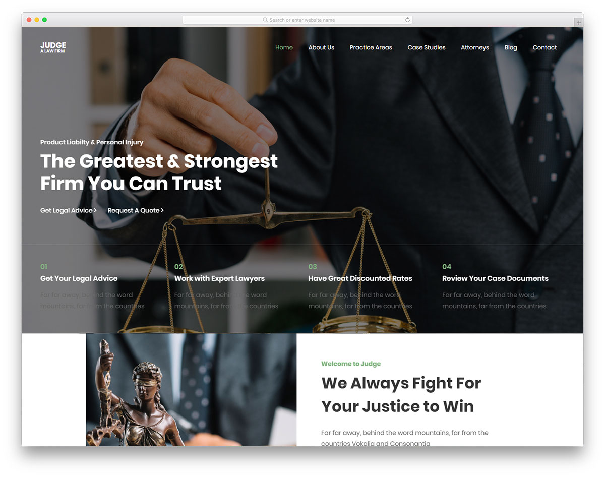
Judge is a free Bootstrap website template for everything law- and legal-related. If you are missing a striking online space, you can now save yourself time and energy with the amazing Judge. Let the template help you sort out an eye-catchy, sophisticated web presence sooner rather than later. Use a website to push your services, present your cases in-depth and even start a blog. Use the latter for sharing tips and tricks and introduce content marketing to boost your company to new heights.
With the flexible and fluid layout, Judge makes sure to work on all devices like a charm. It also flawlessly operates on all modern web browsers, as well as retina screens. Parallax effect, sticky navigation, video support, free consultation form and a special section for attorneys are just some of the goodies of Judge.
More info / Download DemoFundraiser
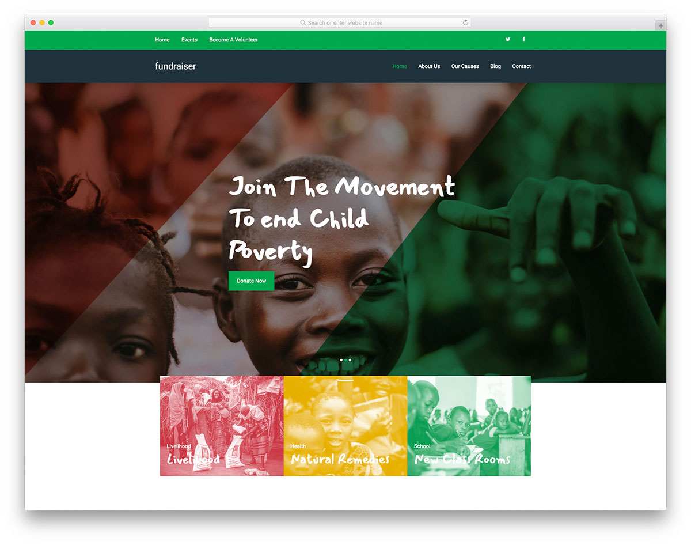
Fundraiser is an all-around free Bootstrap template for anything and everything charity, NGO and, of course, raising funds-related. If you would like to raise awareness for a cause, do it with style and fashion by using the remarkable Fundraiser. The layout of this nifty web design, 100% mobile-ready and cross-browser compatible, so the performance is always of the highest degree. Also, all the content will beautifully display on retina screens.
Moreover, Fundraiser comes with a massive slider, text and call-to-action buttons above the fold. To trigger everyone’s attention right off the bat, a compelling slideshow will do the trick. Othe features include donation and contact forms, blog section and an excellent causes page. Spread the word out like a pro from the very beginning by utilizing the power of Fundraiser now.
More info / Download DemoHarbor
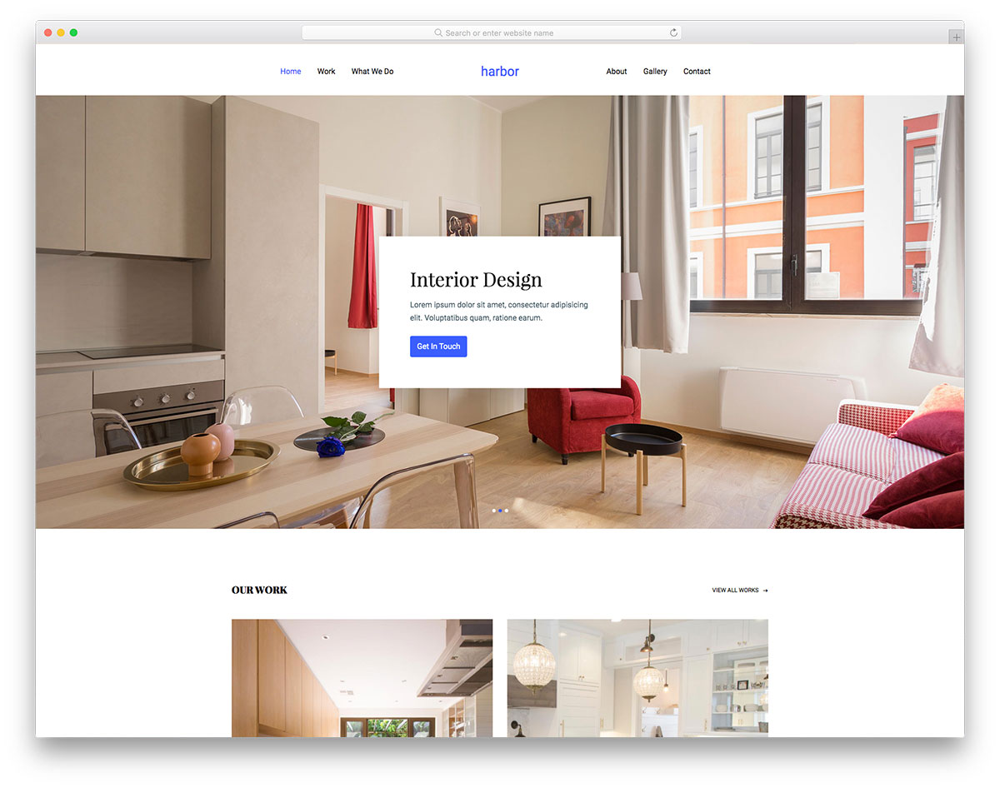
For interior designers, as well as architects, you should consider using Harbor. It is a beautiful and easy to use free Bootstrap template with a horde of awesome features and functions. If you would like to elevate your potential through the roof, you can now make it happen with the use of Harbor. From home to an assortment of different internal pages, Harbor takes care of your online presence’s style in full. Keep in mind, you can employ Harbor exactly as is, but personalizing and branding it is possible, too.
You get all sorts of amenities, like slider, testimonials, social media icons, gallery section and a working contact form. Avoid the process of starting building a page from scratch, choose Harbor instead and make an instant difference. Save yourself time and energy and get online sooner rather than later.
More info / Download DemoHalen
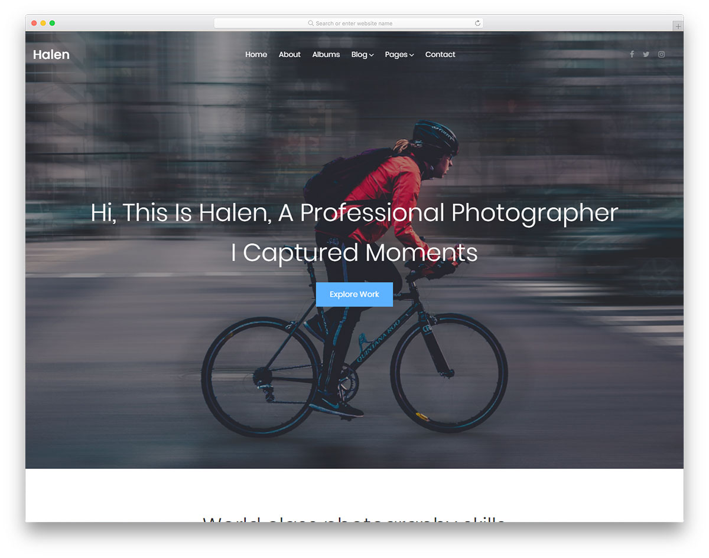
Are you a photographer who is ready to take things seriously and spread the word out professionally? Well, first, let me mention that Halen is a free Bootstrap template that works both for amateur and expert photographers. With its modern and first-class appearance, Halen easily caters to many different tastes, regardless of how picky and meticulous it might be. You can even personalize the out of the box look of Halen if necessary.
Moreover, Halen includes a full-width slider that will capture everyone’s attention in the snap of a finger. Other goodies contain sticky navigation, drop-down menu, testimonials, Google Maps, hover effects and more. You can, of course, link your new photo portfolio with your Instagram profile, too, and introduce a feed. Start on the web like a champ without the need to establish a page from complete scratch.
More info / Download DemoHarbor Lights

Harbor Lights is a versatile free Bootstrap website template for any accommodation business. Hotels, motels, resorts, you name it, anyone can profit from this magnificent site skin. Also, Harbor Lights makes sure that your final product operates smoothly on all devices and browsers. It comes with a flexible and fluid layout anyway. Instead of solely relying on 3rd-party platforms, make sure you take care of your online presence and have even more control over your business.
Some other practical features include availability form, slider, sticky menu, testimonials, you name it, it is all at your fingertips. Of course, Harbor Lights also does not miss beautiful room pages and food menu. To top it all up, you can start a blog, too, and get on a more personal level with your existing and potential customers.
More info / Download DemoCassi

Photographers and photo studios, amateurs and professionals, meet Cassi. This stunning free Bootstrap template is perfect to create a striking online presence for your beautiful work. With its dark look, Cassi promises a strong and impactful first impression that everyone will remember forever. With Cassi, you will have no trouble differentiating from the masses due to its distinct look that you can put into practice as is. Of course, you can tweak and fine-tune Cassi, too, so it matches your style precisely.
Moreover, Cassi comes with an overlay menu, different inner page layouts, blog section, a working contact form and social media buttons. The amazing gallery with load more button with put all the shine on your masterpieces for everyone to enjoy what you do to the fullest. Hit the download button now and make some noise.
More info / Download DemoArchs
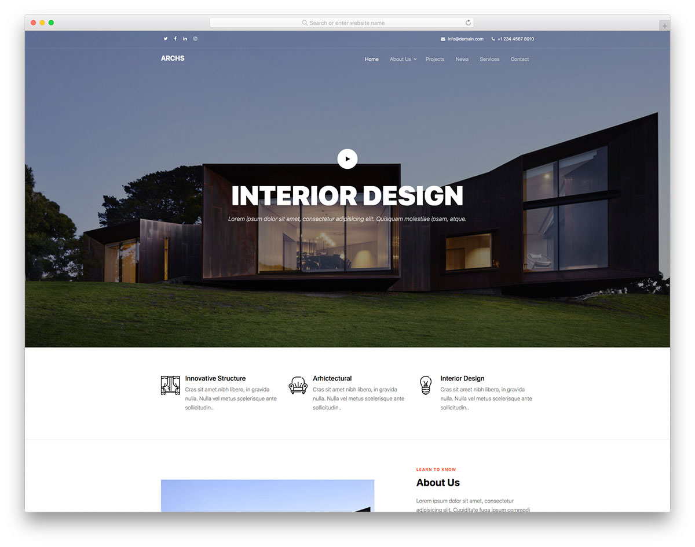
As the name suggests, Archs is the best free Bootstrap template for architects and interior designers alike. The design follows all the latest trends and regulations, making sure the outcome operates on all devices and platforms flawlessly. And it will! Moreover, Archs contains many stunning page layouts and features for you to mix and match. Keep in mind, Archs rocks a one-page structure, so you get to tell everything about your business in a single page. How cool is that?
Other treats include sticky navigation, drop-down menu, pricing plans, video pop-up, testimonials and a contact form. If you are ready for a difference, you are ready for the clean, modern and minimal Archs. Make it yours now and start on the internet with a dope web presentation of your services and projects.
More info / Download DemoGutim
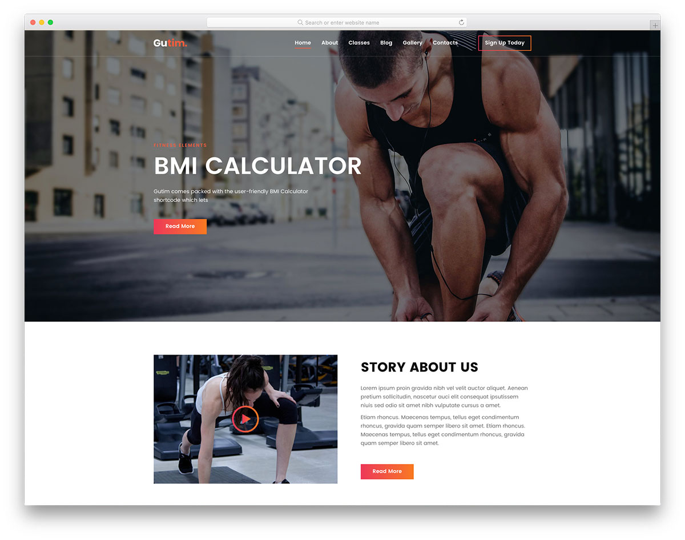
For anything sports, gym, fitness and health related, Gutim will do the trick. This powerful and practical free Bootstrap website template comes with heaps of treats that will get you going in close to no time. For your information, this is an HTML template that requires coding knowledge to turn it into a functional website. However, as far as the design part of your website goes, well, you do not need to worry about that anymore – let Gutim take care of it in total.
Needless to say, Gutim practices all the latest trends and regulations of the modern web. That said, the layout is fluid and responsive, cross-browser compatible, as well as in tune with retina screens and lightweight for fast loading. Promote your trainers, showcase your pricing list, gain new members with the registration form and start a blog, all this and more with Gutim.
More info / Download DemoMelan

Creating a personal profile on the web need not be a too complicated task. One thing is for sure, when you have the right free Bootstrap template at hand, you save yourself plenty of time already. And one of the tools that will do the trick is, without a shadow of a doubt, Melan. It rocks a striking appearance that will trigger everyone’s curiosity right off the get-go. Keep in mind, you can easily use the tool exactly as is. That said, just enrich it with your custom content and details and you could be ready to go already.
Thanks to the Bootstrap Framework, you know that your online portfolio will operate without a hitch on all devices. Whether they come from a smartphone, tablet or desktop, Melan reshapes to any screen in an instant. You will also find animated statistics, testimonials slider, call-to-actions, social media buttons, drop-down menu and many more goodies in between.
More info / Download DemoConsulting
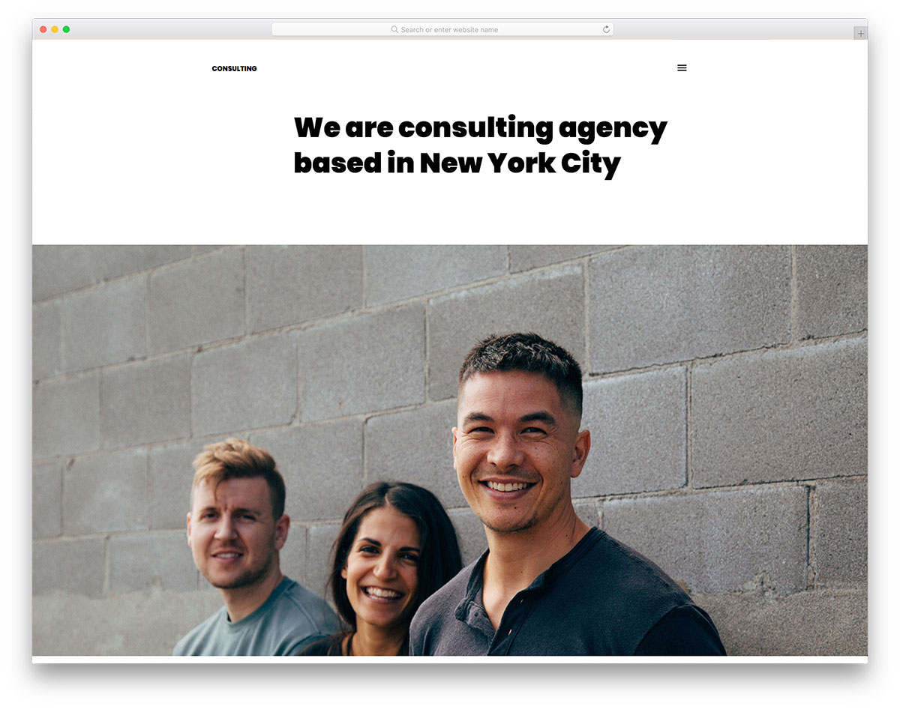
Consulting agencies and consultants, Consulting – hence the name – is the ideal free Bootstrap template for you. It sorts you out with a modern and creative layout that will help you put your business on display online. Make sure you do not miss a solid web presence since you could be leaving a ton of money on the table. Instead, get your hands on Consulting now and start on the world wide web professionally.
With Consulting, you will easily create a positive impact on all your random site visitors and potential clients. Push all your outstanding services, create an online portfolio and build customer trust with testimonials slider. Keep your consulting business off professional level both offline and online and reach the extreme success you would like to attain. It’s possible!
More info / Download DemoWorkout
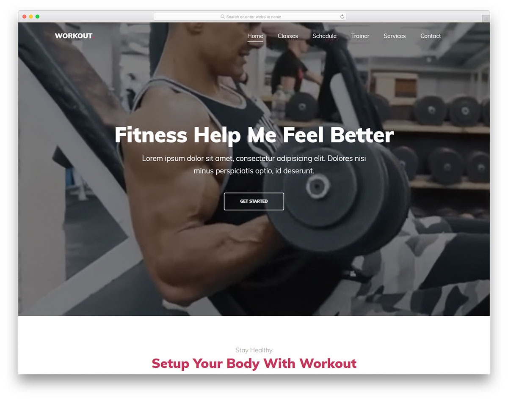
If you are in the fitness and gym space, Workout is the free Bootstrap template for you. It sports a killer web design which will help you win over new customers. Whether you operate a fitness facility or you are a personal trainer, with Workout, you can now create a page without the need to start from scratch. The template rocks loads of awesome features and functions that will keep your professionalism intact. You can employ the layout exactly as is or enrich it with your signature style. Both approaches will give you a superb final creation.
Workout comes with a full-screen video banner/background, sticky menu, parallax and hover effects, weekly classes schedule and a functional contact form. Have in mind, with Workout, you can effortlessly build a one-page website and avoid the classical multi-page site structure.
More info / Download DemoAkame
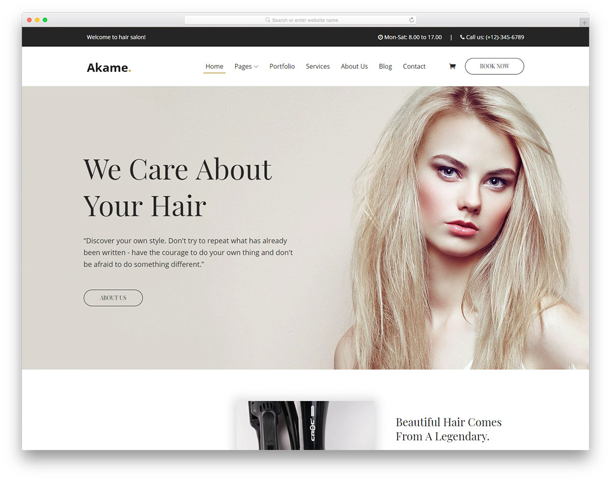
Akame is a free Bootstrap template for everything beauty related. Out of the box, Akame works best for hair salons, but you can use it for something entirely different effortlessly. Its clean, modern and mobile-ready layout gets you going strong in the online world. For the quickest website launch, you can utilize Akame as is and see your page live, attracting new clients sooner than later. Of course, you can also make adjustments until it meets your branding needs precisely.
With the numerous features and other goodies, Akame ensures a professional outcome that will boost your brand awareness. Features come in the form of wide slideshow, on scroll content load, filterable portfolio and back to top button to name a few. Take a peek at Akame’s live preview page and have a better idea of how your page can look like.
More info / Download DemoEndgam

If you are involved in the gaming industry and would like to start your own project, kick it off with Endgam. This free Bootstrap website template has a stunning, dark and contemporary web design that will surely capture everyone’s interest. Thanks to the Bootstrap Framework, the layout is also entirely responsive, flexible and extendable. Your gaming website will work smoothly on all devices, from smartphones to desktop computers. Endgam is as well in tune with retina screens and popular web browsers.
When it comes to features, Endgam delivers a drop-down menu, slideshow, newsletter subscription form and several internal pages. You can start a game review site, announce new releases and talk about other hot gaming topics. Endgam is here to get your project an attractive look that will bring in more visitors.
More info / Download DemoIonize
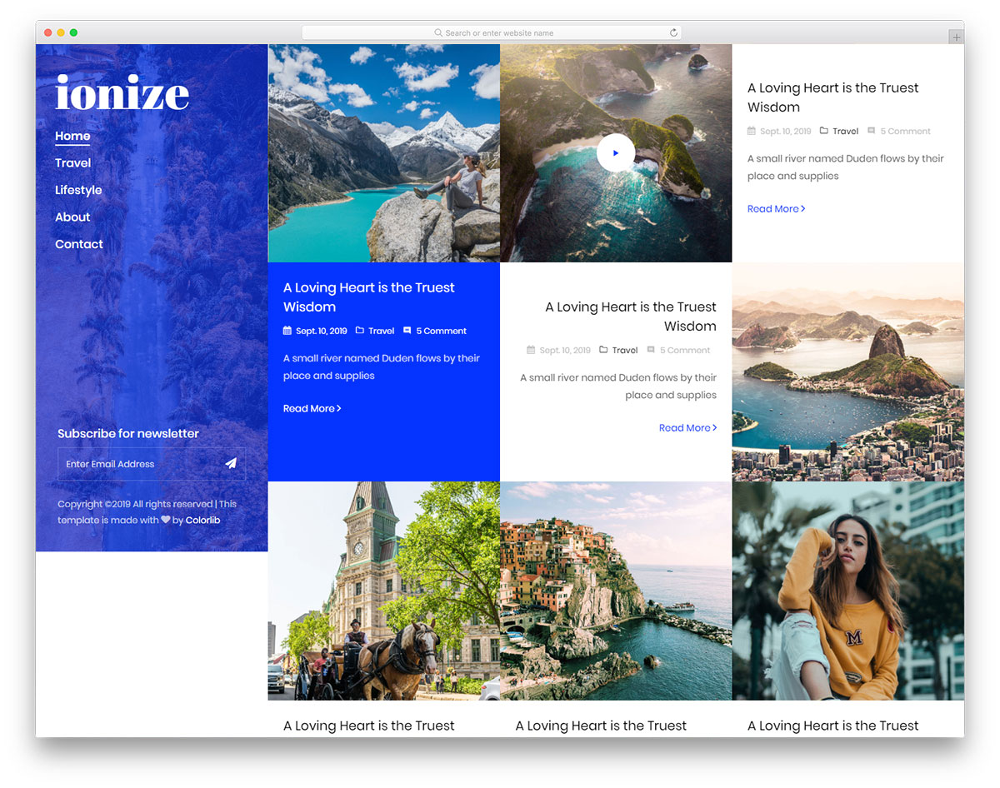
Ionize is a fantastic free Bootstrap template with a modern, elegant and trendy web design. It is a tool perfect for establishing blogs and online magazines without the need to start from scratch. Ionize is based on Bootstrap Framework, which ensures flexibility and compatibility with all devices. In other words, Ionize is mobile-ready, cross-browser compatible and in tune with retina screens. To sum up, Ionize follows all the latest trends and regulations of the modern web.
Other nifty goodies of Ionize include sticky sidebar menu, slider, video support, hover effects and newsletter subscription form. Speaking of forms, Ionize also comes with a working contact form integrated into the web design. Last but not least, Ionize includes Google Maps, too. Start spreading the word out with the one and only, Ionize, and create a community of loyal followers.
More info / Download DemoHaircare

Haircare is a free Bootstrap template for hair salons and barbershops. If you would like to reach a wider audience, do yourself a favor and create an online presence with Haircare. This gives you more than enough space to talk all about your services, share your portfolio and advertise your pricing. It is a striking solution that will help you get on the web sooner rather than later. At least when it comes to the design of your page, you do not need to brainstorm it anymore. Feel free to use Haircare as is or improve it accordingly.
Parallax effect, call-to-action buttons, sticky navigation, online appointment form, beautiful gallery, you name it, Haircare rocks it all and then some. You can also boost customer trust with testimonials and start a compelling blog. Use the latter to give back to the community by sharing your hair knowledge through insightful articles.
More info / Download DemoWellSpa
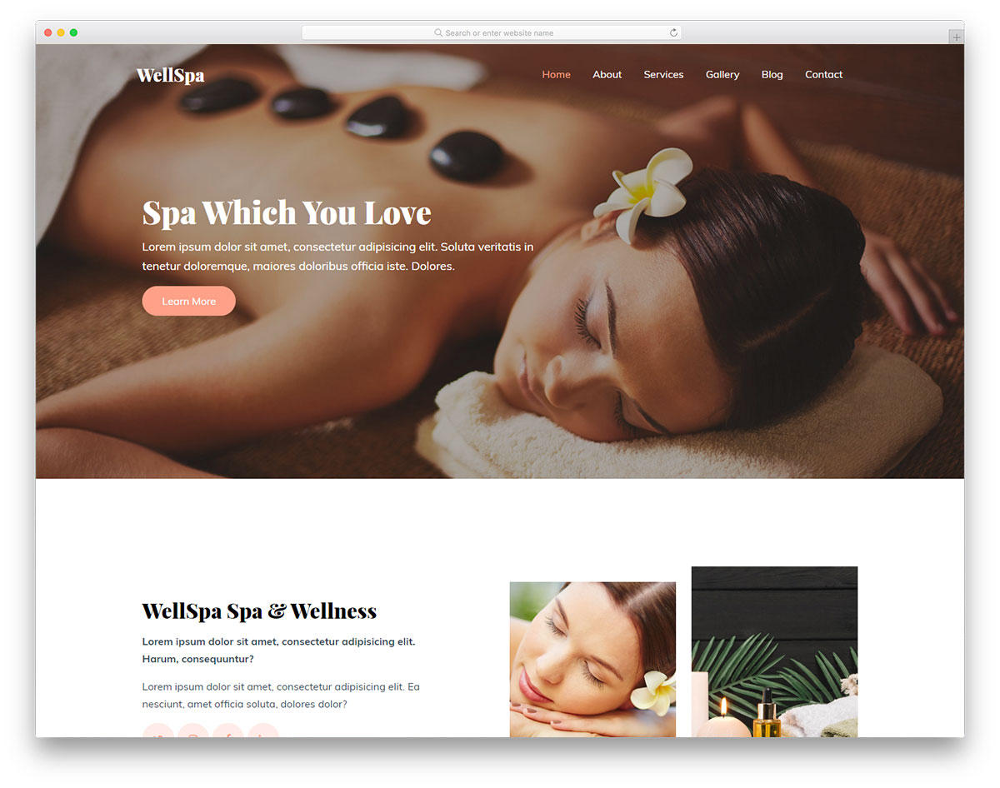
As the name suggests, WellSpa is a wellness and spa free Bootstrap template with a gorgeous design. If you would like to establish a strong and memorable first impression, do things the WellSpa way. Let the tool take care of the design while you focus on all the rest. Let’s face it, WellSpa is an HTML template which needs additional work to turn it into a functional page. But you definitely do not need to start from scratch anymore.
WellSpa practices all the modern web trends, like responsiveness, cross-browser compatibility and retina-friendliness. Along with the home page layout, you also get other sections for about, services, gallery, blog and contact. WellSpa contains social media icons, functional contact form and parallax effect, too. That’s that, now you know where to start and take your business to new heights.
More info / Download DemoSunshine
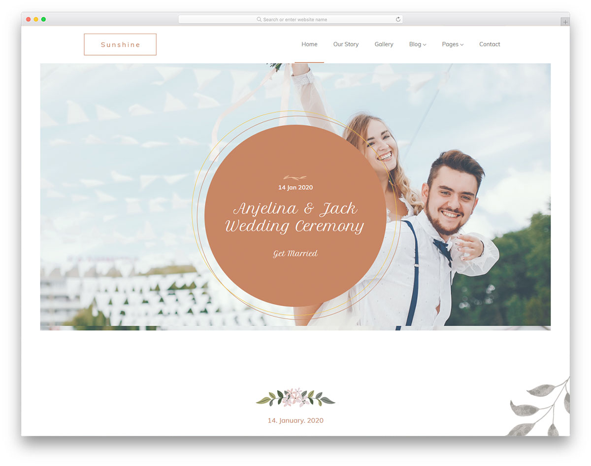
Sunshine is a lovely, modern and eye-catchy free Bootstrap template for everything wedding-related. It is a tool full of features and functions that help you sort out the web design of a page quickly. For your information, you can freely use the tool exactly as is, as it caters to different intentions easily. Moreover, you can also spice things up and enrich Sunshine to your likings. It is a site skin that you will find a breeze using.
Some of the amenities of Sunshine are sticky navbar, countdown timer, an outstanding gallery and an RSVP form. If you would like to attract the attention of every visitor, Sunshine will surely do the trick. It also comes with integrated Google Maps for displaying the exact location. Weddings, marriages, nuptials, however you want to call them, get the hype going strong with Sunshine.
More info / Download DemoWeMeet
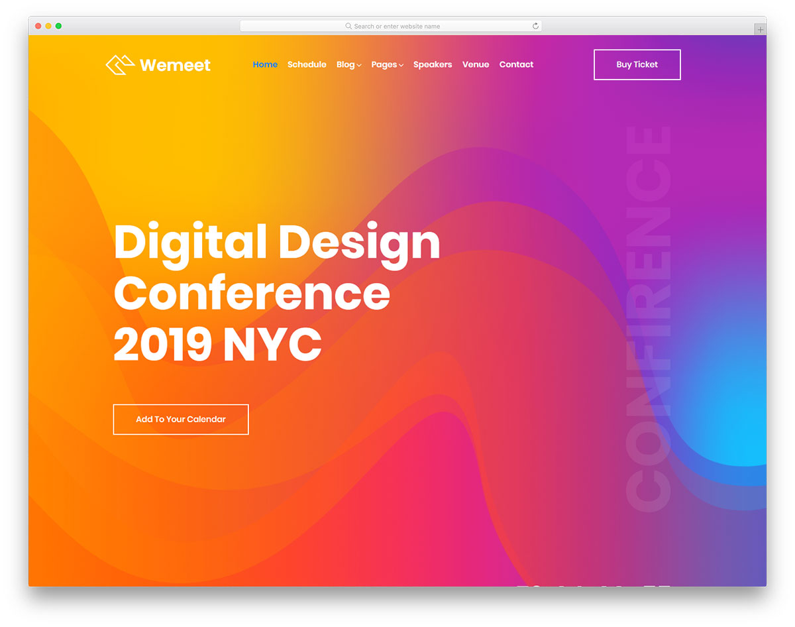
As the name suggests, WeMeet is a free Bootstrap template for meetings, conferences and events. The design of WeMeet is very vibrant, contemporary and engaging. If you would like to raise the potential of your upcoming event, you better sort out the website as soon as possible. With WeMeet, you can now speed up the process and bring into being a striking solution that will welcome on board even more attendees. In short, with WeMeet, you will present every event in the best possible light.
With a killer above the fold section, anyone will instantly want to learn more about the happening. Spark urgency with the countdown timer, introduce the speakers and even share full event schedule. Some other goodies of WeMeet contain accordions, drop-down menu, working contact form and Google Maps, to name a few.
More info / Download DemoEdumark
Edumark is an all-around killer free Bootstrap website template for online courses and other online learning programs. If you are in the process of launching a new project, you better get things moving forward with Edumark. This magnificent web design guarantees an excellent outcome that will beautifully display all the custom content that you want to share with your audience. As far as the design goes, you now have it fully sorted out with the amazingness of Edumark.
Moreover, Edumark follows all the latest trends and regulations of the modern web. It is entirely responsive, cross-browser compatible and retina screen-friendly. All this tells you is that Edumark ensures stable and flawless performance for every user. Yes, whether they use a handheld or a desktop device, Edumark always displays content stunningly. Without further ado, dive all-in right now by downloading Edumark and make a difference.
More info / Download DemoYourAgent
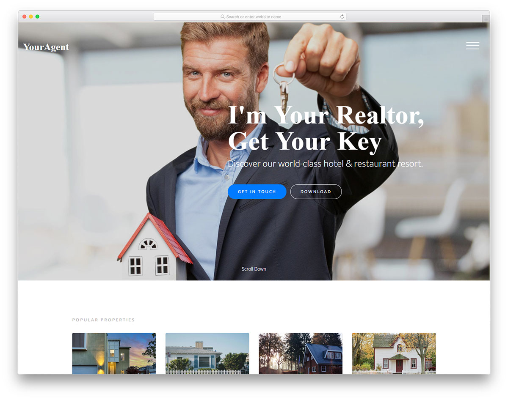
YourAgent is a neat free Bootstrap template ideal for realtors and real estate agencies. It rocks a clean, modern and sophisticated web design that will help you push your services and properties further. Whether you are just starting out or you are already an established individual or firm, with a killer website you can reach a much broader audience. Let YourAgent do the trick and bring in even more potential customers and take your business to new heights.
Right off the bat, YourAgent welcomes everyone with a full-screen banner which includes text and call-to-actions. All the content loads while you scroll what makes the appearance even more pleasant. Other goodies include testimonials slider, blog, newsletter widget and a fully functional contact form. Display apartments and houses professionally and boost your potential through the roof.
More info / Download DemoDeejee

If you are looking for a modern, easy to use a free Bootstrap template that focuses on the music industry, particularly DJs, you came to the right place. Deejee is a fantastic page canvas with a stunning and elegant layout which perfectly adapts to all screens. Whether they use handheld or desktop devices, Deejee will display all your content stunningly. On top of that, Deejee is also retina screen friendly and cross-browser compatible. Moreover, you can utilize the layout out of the box or you can also tweak it if necessary.
Some of the goodies Deejee includes in the kit are parallax effect, multi-level drop-down menu, testimonials/review slider and social media icons. There is also a contact page with a working form, as well as newsletter subscription. Take your online presence to another level and spread your tunes worldwide with Deejee.
More info / Download DemoBasketball
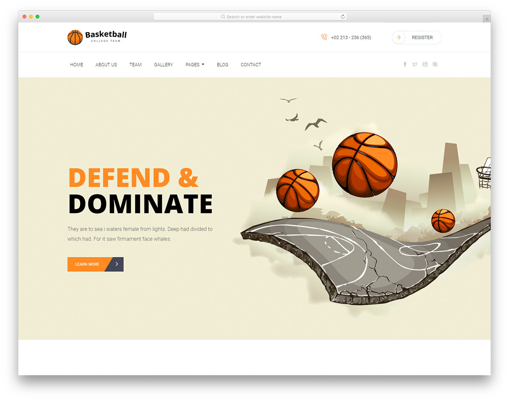
As the name suggests, Basketball is a fantastic free Bootstrap template for sports teams. Nope, you do not need to stick to basketball only, you can use the tool for other team sports, like soccer, football, volleyball, hockey and similar. Basketball brings to the table a striking site skin which you will have a breeze using. With its neat and tidy structure, you will never find yourself lost in the lines of code. However, chances are high that you will want to use the design as is. On the other hand, you can always improve and adjust the look and fine-tune it according to your needs and regulations.
Basketball rocks all the latest trends and regulations to ensure your page operates flawlessly. It has a 100% mobile-ready layout, so it works like a dream no matter what device and platform they use. Additional amenities of Basketball are gallery, sticky navbar, an Instagram-ready feed and a clean team page.
More info / Download DemoMusico
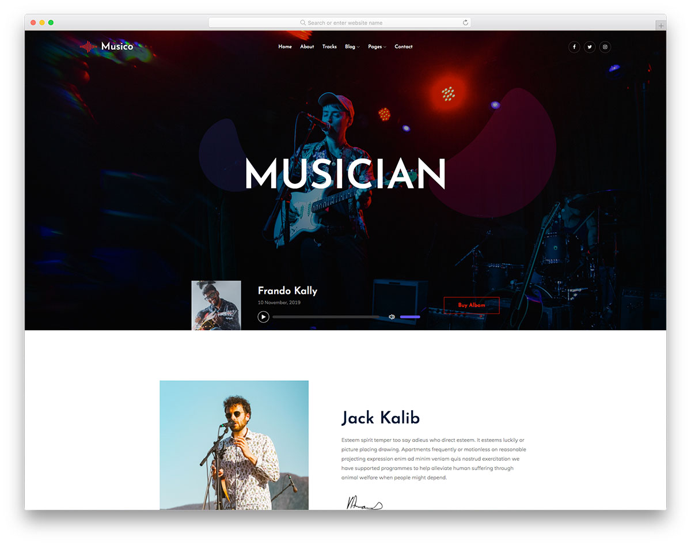
Musico is an excellent free Bootstrap template for musicians and bands. With this remarkable site canvas, you can start on the web, spreading your tunes, sooner rather than later. Instead of kicking a fresh project off from scratch, you can now save yourself time and energy with a predefined template. In fact, if you dig the look exactly as is, you can freely use Musico out of the box. However, if you would like to personalize it, you can do that, too.
Musico practices all the latest trends, like responsiveness and cross-browser compatibility. The code is lightweight and easy to edit due to its tidiness. Musico also features social media icons, gallery, working contact form and Google Maps. You also get all sorts of practical elements that will get you going swiftly.
More info / Download DemoLogistico
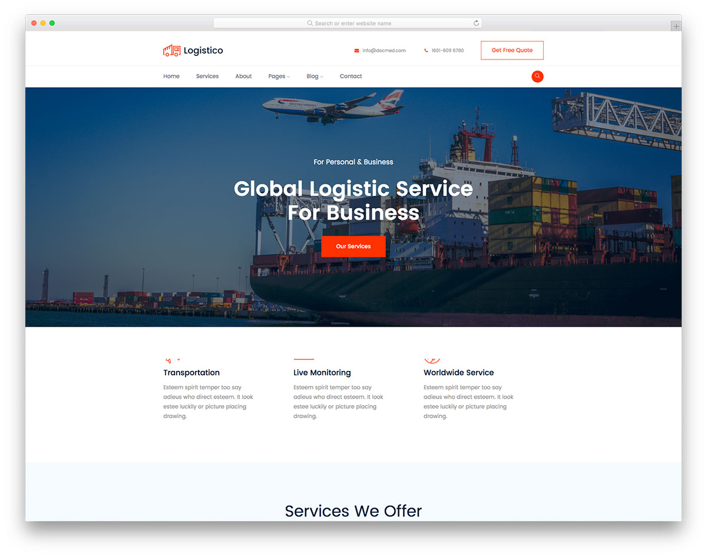
Logistico, as the name suggests, is a free Bootstrap template for logistics and transportation companies. It comes as stunning, modern and professional web design with many features and functions. Instead of doing the heavy work from square one, you simply go with Logistico and sort out the web design speedily. Keep in mind, this is an HTML template that requires coding knowledge to turn it into a functional website.
Some of the features contain call-to-actions, drop-down menu, sticky navigation, sliders, animated statistics and testimonials. There is a free estimate form integrated into the design, too. Logistico also does not miss blog pages and a full-blown contact section. If you are ready to enter the industry with a bang, make a website with Logistico. The performance of your page will be first-class, taking everyone’s breath away.
More info / Download DemoGym2

Fitness facilities, gym centers, personal trainers, you get the gist of it, Gym2 is a remarkable free Bootstrap template for a modern website. With the beautiful and enticing dark layout, you can easily capture everyone’s attention. Once you enrich Gym2 with your professional photographies, services and other useful information, you will comfortably win over new enthusiasts. That is exactly what to expect from a powerful solution like Gym2. Of course, stuff like marketing and the skill to sell your services play a big part in your success.
Gym2 has an array of goodies, like full-width slider, pricing plans, gallery, hover effects, social media buttons and a contact page with form and Google Maps. There is also a blog section that you can use to share tips and tricks on how to stay in shape and healthy. Introduce a content marketing strategy if you will.
More info / Download DemoDaren

Daren is a modern, simple and minimal looking free Bootstrap template for bloggers. In fact, even if you are starting an online magazine or any other news site, you can get things moving forward without a hassle by employing the cracking Daren. The template makes sure that it delivers all your content without distractions. Indeed, the experience skimming through and reading your articles, checking out images and watching videos will always be enjoyable. No need to worry about deliverability across different devices and platforms either; Daren works with all and then some fluently.
In the package of fantastic features, Daren contains social icons, search feature, widget-rich footer sections, newsletter subscription form and a contact page with form and Google Maps. No matter what niche you are passionate about, Daren will adapt to it in an instant. And you can always update and enhance the default look of Daren when necessary.
More info / Download DemoTourbi
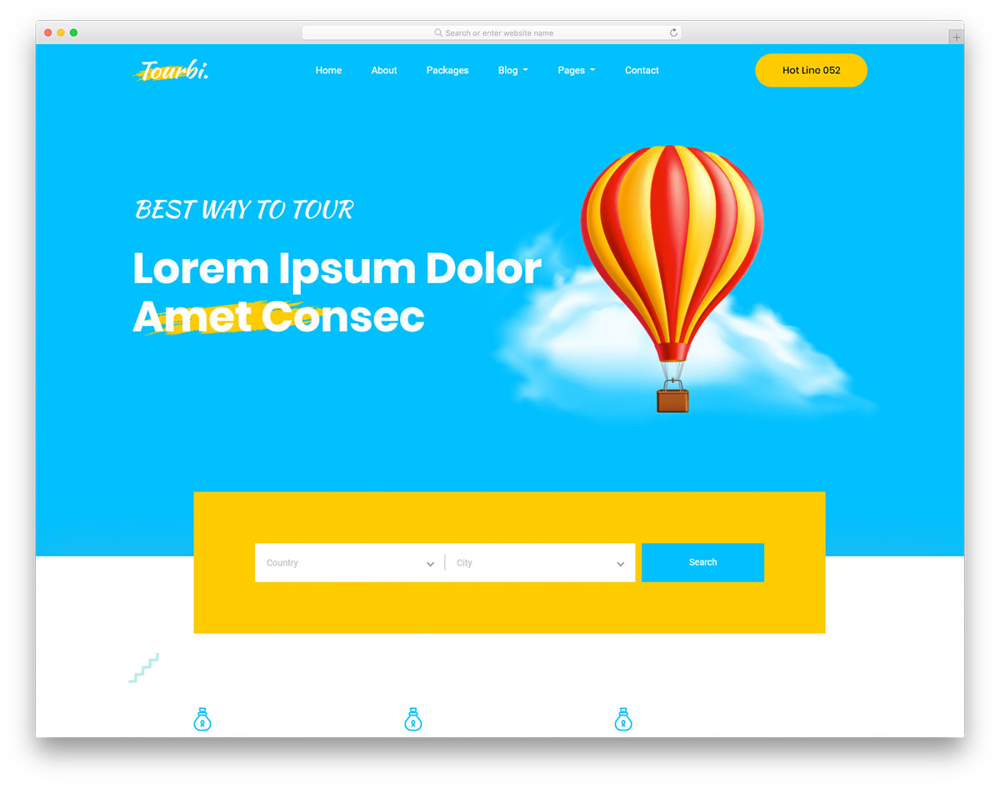
Tourbi is a free Bootstrap template for travel agencies and other travel and tourism businesses. With the modern, clean and vibrant look, you will have no trouble capturing their attention and winning them over. Tourbi sports a horde of features and functions which make it more premium than free.
One thing is for sure, with Tourbi, you do have the web design sorted out. Along with home page layout, Tourbi also includes pages for about, packages, blog and contact section. The latter even contains Google Maps and a working form.
No need to wonder, Tourbi is, of course, responsive, cross-browser compatible and retina screen-ready, too. Now get involved in the online space with a banging web presence thanks to Tourbi. In addition to that, start a travel blog and introduce content marketing to your business.
More info / Download DemoUptown
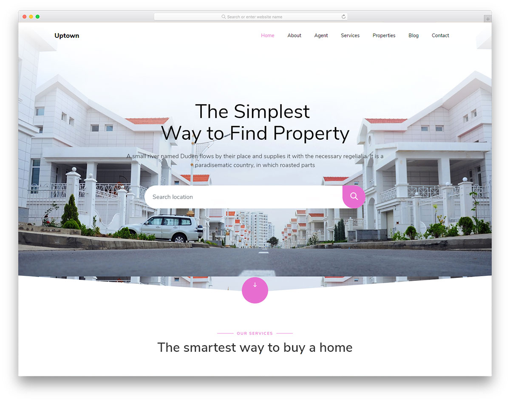
Uptown is an all-around free Bootstrap Framework website template, focusing on real estate and property management. If you would like to hammer out professional and sophisticated web design for your business, you better sort things out with the enviable Uptown. This layout has a clean and minimal look, emphasizing your properties first thing. Feel free to employ Uptown exactly as is, however, you can also tweak it according to your branding regulations and requirements.
Some of the features include parallax effect, search function, sticky header, on scroll content load, testimonials slider and social media icons. In the bundle, you will also discover blog pages and a contact section with Google Maps and form. The design is predefined and ready to use – now get the most out of it and shine online.
More info / Download DemoMiniblog
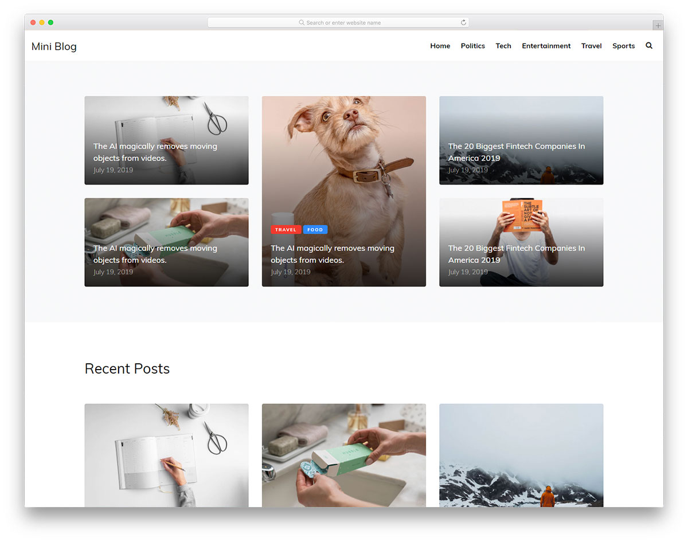
Miniblog – hence the name – is a free Bootstrap template for crafting the niftiest blog with a minimal look. If simplicity and sophistication are the two characteristics you look in a website template, Miniblog will surely spark your interest. You can use Miniblog both for online journals and magazines. Moreover, you can also go niche or general both approaches work perfectly fine with Miniblog. The options are there, just get your hands on the outstanding and awe-inspiring Miniblog and start sharing your story with the world.
The layout of Miniblog is minimal and flexible, instantly reshaping to any device. Whether they read your compelling articles from a mobile or a desktop device, the performance will always be of the highest degree. Due to the lightweight structure, Miniblog also loads exceptionally fast. Get yourself involved in the blogging space with Miniblog and enjoy the outcome.
More info / Download DemoEcoland
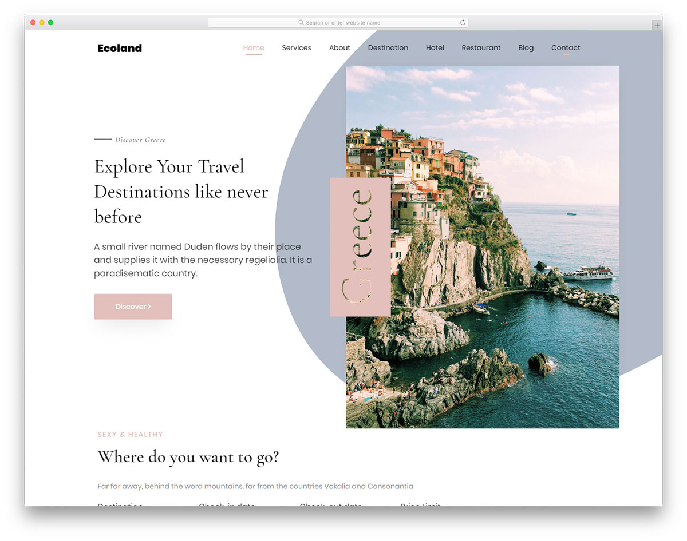
If you are in the tourism space, you definitely need to own a website. Nowadays, we surf the web to find the next travel destination we want to visit. Not only that, we use our smartphones to make bookings, too. Whether you organize tours or you run a travel agency, Ecoland is the free Bootstrap template that you should not miss. It has a contemporary and minimal look that will capture everyone’s attention in an instant. Especially the awesome split-screen slider which intrigues everyone seeing it.
Additional amenities of Ecoland are sticky navigation, search feature, hover effects, contact form and Google Maps. Bear in mind, Ecoland has a one-page website layout which gives you a chance to tell about your agency, share blog posts and, of course, the must-see travel destinations. Introduce your creative twist to Ecoland and you have a winning combo that will drive your tourism business forward.
More info / Download DemoWinkel
Winkel is a clean and creative online clothing store layout that you can easily put into play for building your brand website. This free Bootstrap template has a 100% mobile-ready and cross-browser compatible layout that works all the time flawlessly. That said, regardless of which device and platform they use, the experience will always be the same impressive one with Winkel. From striking home page to multiple internal sections for a shop, about, blog and contact, Winkel has it all and then some.
If you dig the look, you just saved yourself a ton of time and energy, coming up with your own custom one. Of course, you can fine-tune Winkel to your branding regulations and make it your own effortlessly. On the flip side, feel free to use it out of the box and speed up the process of establishing your eCommerce page further.
More info / Download DemoMosaic
As an architect or an interior designer, you should certainly not miss a compelling online presence. With Mosaic, you can create one quite quickly. This free Bootstrap template brings the necessary web design that will boost your professionalism to a whole new degree. Although your works are already of the highest level, Mosaic will make sure to take it over and above.
Mosaic is responsive and cross-browser compatible, with the right layouts and components to cover every section of your architecture business. Split-screen slider, parallax effect, animated statistics, categorized portfolio and testimonials are just some of the qualities of Mosaic. Besides, if you run a biro, you can introduce your architect team and tell your comprehensive story about how it all began. You can also start a blog and ensure everyone to know your exact location by checking Google Maps.
More info / Download DemoPhotoGallery

PhotoGallery, unsurprisingly, is a free Bootstrap template for amateur and professional photographers. Not only that, but if you would truly like to stand out a mile, again, PhotoGallery is the tool you should consider using. It has a creative and innovative web design that establishes a strong and lasting first impression. On top of that, everyone that visits your page will have an unforgettable experience. This goes to all, mobile, tablet and desktop device users.
If you are ready for something exclusive, PhotoGallery is the right solution for you. The site canvas is easy to use and follows all the latest trends and regulations of the web. Bring your outstanding imagery to the world wide web and get the word out. People will notice you and your chances of scoring a new gig are indeed much higher with a striking online portfolio.
More info / Download DemoPentax
Pentax is a simple to use free Bootstrap template for amateur and professional photographers. However, if you fancy the design of Pentax but you are not a photographer, that is perfectly fine, too. Any freelancer and creative individual can freely utilize the amazingness of Pentax. With its clean and simple look, Pentax makes sure that all your content gets delivered to the end user in the best possible way. And knowing that the tool is entirely responsive and cross-browser compatible, you know the experience will always be top-notch.
Some of the features of Pentax are parallax effect, call-to-action buttons, sticky navigation, categorized portfolio and pricing plans. Pentax also includes testimonials, blog pages, as well as newsletter subscription and contact forms. Forget about starting your online presence from scratch, when Pentax can save you quite a decent portion of time.
More info / Download DemoSlim
Slim is a magnificent one-page free Bootstrap website template for fitnesses and gyms. With its modern, neat and professional layout, you will have no trouble capturing everyone’s attention right away. Slim welcomes everyone with its full-screen split-screen slider with text and call-to-action buttons. Use it strategically and keep all your recent visitors engaged and hungry to learn more about your programs and coaches. When the web design is already done for you, seeing it as a final website creation is much easier.
Slim practices all the current web and tech regulations, ensuring a steady operation of your page. It is, of course, responsive, in tune with web browsers and compatible with retina screens. The core structure of the template is organized and simple to use. Some other goodies of Slim are weekly schedule, animated statistics, working contact page and Google Maps.
More info / Download DemoStated
As a realtor or real estate agency, you better have your online presence fully sorted out. You can now help yourself with the striking Stated. This free Bootstrap template rocks a killer one-page layout that will help you take your business to an entirely new degree. Presenting all your properties now happens much easier than you previously thought. Sure, there are tons of 3rd-party platforms to use to sell real estate, but running an official website will make you appear a lot more professional.
Stated comes with a sticky header, full-screen banner, testimonials slider, services section, contact form and subscription widget. Stated’s layout is fluid and flexible, instantly adapting to all devices, smartphones, tablets and desktop computers. Start pushing houses, apartments, condos and other properties with Stated and make a difference.
More info / Download DemoTasty
Chefs, restaurants and everyone else in the food business, Tasty, hence its name, is an ideal free Bootstrap template for you. To sort out your internet presence, this is one of the best approaches you can take. Moreover, since Tasty is based on the powerful grid system, it ensures your page to be entirely responsive, fluently adapting to all devices. Besides, Tasty is also in tune with modern web browsers and highly optimized and easy to customize.
Give everyone the opportunity to drool over your succulent images and book a table using the integrated form. Speaking of form, it also has a date and time picker for your convenience. Other than that, Tasty comes with a filterable food and drinks menu, parallax effect, testimonials slider and Instagram images. You can also start a food blog and capture their emails with the included newsletter subscription widget.
More info / Download DemoHealth
Health is a free Bootstrap template for clinics, hospitals, health institutions, as well as doctors, surgeons and dentists. Basically, everyone in the field can take Health to his or her advantage. It is a page building tool that gives you the freedom to craft your own online appearance and take your business to the next level.
Everyone who is in need of your services can now first check out your site to learn more about you before reaching out. And they do not even need to pick up the phone since they can make an appointment using the implemented form.
With the nifty home page, Health provides all the necessary sections for you to introduce yourself and give them a reason to pick you. Other internal pages are there for a comprehensive overview of your business to truly get a better understanding of your services.
More info / Download DemoAcademica
Similarly to the last one, Academica also hints you at what it is all about with its name alone. Indeed, Academica is a free Bootstrap template for online courses and other educational programs. You can definitely use this template for schools and universities, too. Academica is a simple to use and highly modifiable site canvas that you will enjoy using and establishing a page with. Even if you already run a website but is in need of a refreshment, Academica will do the trick as well.
Due to following the modern technologies, Academica is responsive, cross-browser compatible and performing at the highest level. Search option, testimonials, courses page, about section and a blog along with a fully working contact page, Academica bundle is loaded with features. And for those students who would like to be updated with new programs, they can also sign up to your mailing list using the integrated subscription form.
More info / Download DemoVcard2

Creating an online resume is easier than you may think in the modern era, we live in. Not to mention, approaching an employer or a potential client with a sophisticated vCard is something that can bring you really far in your career. If nothing else, sending them a link to your page instead of the good old boring CV can easily make you stand out a mile. Collect all your skills, education, experience and other rewarding goodies in one place with help from the amazing Vcard2.
This free Bootstrap template is here to realize your internet presence swiftly and reliably. The web design of Vcard2 is very simple to skim through, yet professional looking and elegant. While personal information appears as a sidebar and stays there intact, the main content changes regarding the information they will want to know about you. There is also an active contact form for when they would like to get in touch with you for business.
More info / Download DemoBizcon

Bizcon is a modern free Bootstrap template – hence the name – ideal for everything related to business consultancy. Of course, the tool is versatile enough to work with other intentions, too. But if you stick to the web design exactly as is, you can create a stunning online presence that will take your firm to an entirely new degree swiftly. Bizcon keeps things professional and sophisticated, making you appear on the internet in the best possible light.
The web design rocks incredible attention to detail, modern vibes, testimonials slider, sticky navigation, drop-down menu and lovely single project page. Bizcon also does not miss social media icons, working contact form, Google Maps and blog section. Save yourself time and energy and get things moving forward with the terrific free website template, Bizcon. Your business deserves only the best.
More info / Download DemoKanox
Digital agencies and even freelancers, you are in for a neat web design treat. Kanox is the free Bootstrap website template which offers a striking canvas to work with. Out of the box, Kanox comes with a dope collection of features and functions which you can put into play right away. Also, when you work with Kanox, you do not need to worry about the technical characteristics. Meaning, Kanox is 100% mobile-ready, cross-browser compatible and retina screen friendly. The operation of your online space will be a striking one all the time.
Some of the Kanox amenities are sticky menu, animated statistics, testimonials, Instagram-ready feed, newsletter subscription and video support. Contact form, Google Maps, portfolio and blog are also included in the bundle. Hit the download button now and take Kanox to your full advantage without giving it a second thought.
More info / Download DemoInnova
Innova is an excellent free Bootstrap template for businesses and agencies. With its flexible and extendable web design, you can employ Innova for an assortment of different intentions. In short, the outcome will be a striking page that will help you take your business to an entirely new degree. Thanks to the Bootstrap Framework, your website will also be fully responsive, perfectly adjusting to all devices. Also, Innova works flawlessly with modern web browsers and retina screens.
Some other goodies of Innova are parallax effect, on scroll content load, testimonials slider and a working contact form. You can start your journey strong on the internet, without the need to build a page from the ground up anymore. Let Innova take care of the design of your page while you focus on turning it into a real web space.
More info / Download DemoJudicial
Attorneys, lawyers, legal firms, you name it, Judicial is the free Bootstrap template you should consider. It helps you quick-start the online presence of your project with a superior design that looks professional and sophisticated. Also, Judicial practices all the latest trends and regulations in web development, making sure the operation of your page runs all the time smoothly. Above the fold, Judicial sports a full-screen banner with parallax effect. Alongside, it also comes with text and call-to-action button, encouraging them to take charge right away.
The overall layout is modern and clean, making sure to display all your content beautifully. What’s more, you will find accordions for FAQ, testimonials, social media icons, newsletter subscription form, full-blown contact section and more. Spread the word out with Judicial and start sealing new business deals on a regular.
More info / Download DemoRoxandrea
Roxandrea is an all-around free Bootstrap template for hotels, resorts, hostels and other accommodation businesses. With its outstanding web design, you will have a breeze keeping the engagement at an all-time high. Right away, all your potential customers get hit with a big slider and a booking form. They do not even need to browse the page to take action and find their best option for their next adventure.
Additionally, Roxandrea comes with scrolling animations, beautiful room pages, sticky navigation, testimonials, restaurant menu and Instagram-ready feed. Also, you can employ the blog section and use it for content marketing specifically. Last but certainly not least, Roxandrea includes Google Maps and a functional contact form, too. Base the foundation of your hotel website around Roxandrea and make a difference once and for all.
More info / Download DemoFoundation
If you are looking to create a website for a charity, non-profit organization or a fundraiser, you can do one now with Foundation. This Bootstrap template equips you with a neat site skin which will save you time and effort. As for the web design, that is something you do not need to worry about anymore. Instead, just stick to the amazing Foundation and start making moves on the web sooner rather than later. Avoid starting from complete scratch and still achieve crafting a remarkable website with the modern Foundation.
From slider and animations to testimonials and a functional contact form, Foundation rocks it all and then some. Bear in mind, Foundation is also an excellent solution for everyone out there who is interested in creating a one-page website. Have it all featured on a single-page layout and increase your potential.
More info / Download DemoYoga
Yoga studios but truly any gym and fitness can utilize Yoga free Bootstrap template for their websites. If it happens that you are not online yet, boys and girls, you might be leaving a ton of money on the table. Do not do that. A website is one of the best marketing tools you can use for your yoga business or any other business in general. You can also link it with your social media accounts and have it all mixed and matched in the right way.
Yoga has a big slideshow, menu overlay, loads content on scroll and includes pricing tables. The overall web design of Yoga is clean and minimal, beautifully displaying your services, classes and trainers. There is also a classes schedule, blog and Instagram-ready feed. Contact page with a functional form and Google Maps is also part of the Yoga experience.
More info / Download DemoLibro
Starting a blog in this day and age is not challenging at all. There are full blogging solutions available to you which allow you to make the desired blog quickly and efficiently. And you do not really need to be super skilled at the process of development of your page. With Libro free Bootstrap template, you get an original and creative web design that brings your blog on a whole other level right off the bat.
While the majority of blogs are pretty identical on the looks, Libro comes entirely different. It arises with a split screen style of a responsive and mobile-ready layout. On one part of the screen, you have a slider, and on the other part is your compelling content. Even menu, although an overlay style, appears only on the slideshow half. If doing things differently is your thing then you sure need Libro.
More info / Download DemoMusica
As the name suggests, Musica is a free Bootstrap template for bands, artists and other musical projects you are passionately working on. That said, if you need to build a page to share your tunes with the world, now is the right time to do it. Although you might be super busy coming up with the perfect riff, in between, you have just the right amount of time to create the website thanks to Musica. The tool did the work already, you just need to put it to use.
Since it is based on the amazing Twitter grid system, Musica comes 100% mobile-ready. All your fans are able to check you out from their phones, tablets and desktops. Not to mention, Musica is also retina-ready and in tune with all popular web browsers. It comes with an assortment of advanced features to make you emerge on the web super professional. You can push your forthcoming shows, create a playlist and share what you have been up to lately.
More info / Download DemoRaptor

Web hosting companies are in for a treat when they discover the up-to-the-minute Raptor free Bootstrap website template. From now on, building things from scratch is a thing of the past. It is Raptor that has the ready-to-use material at your disposal, so make sure you use it to its full potential for a killer web space that will drive your business. You might also consider redesigning your existing page once you stumble across Raptor due to its appealing and attractive web design.
With its cool banner and built-in slider, you will not have a problem grabbing their attention and fire up their interest. Once they start browsing and experiencing your website and your offerings, chances are, they are hooked already. Take them on a journey of finding their ideal hosting plan and picking up a domain name and seal new deals on a regular.
More info / Download DemoWisdom
For churches exclusively, here we have Wisdom. This free Bootstrap template has you covered with all the must-haves and then some to hammer out one banging church website. It is modern, elegant, professional, neatly crafted and furnished with features. No doubt, you will have a ton of fun coming up with the best possible website that will spread the God’s Word amongst a much wider audience.
There are a lot of specialties that come with Wisdom that do things in a unique and creative way. Do stand out from the crowd and set up a website that everyone will love visiting on a regular basis. Wisdom rocks a video background, has an exclusive section just for sermons and a convenient countdown timer for your upcoming events. Let them get familiar with pastors and share different stories using the integrated blog section, all this with the free tool, Wisdom.
More info / Download DemoFitnessGym
FitnessGym is a free Bootstrap template specifically designed for fitnesses, gyms and other health projects you are running. If a website is still on your to-do list, you better build one with FitnessGym. It is a simple to use tool with the right equipment for you to set yourself up a web space that will raise your business to new levels. You can showcase all your fitness classes and get people to enroll via your page. Have your sessions and attendees fully organized so you never miss a thing.
There is a variety of fun stuff you get with FitnessGym. From an eye-catching slider and sticky navigation to special deal animations, chat and newsletter subscription from. Quite a lot is going on on FitnessGym despite the fact it is a free template. Along with that, do take the opportunity to adjust the layout of FitnessGym, too, and make it follow your branding.
More info / Download DemoTechMag
Building an online magazine, even in the tech field, is nothing strange anymore. Even if you are relatively new to the process, with TechMag free Bootstrap template, you can have a page up and running without a hitch. The tool is a contemporary piece of web art which rocks all the latest technologies and follows all the modern web directions. In short, TechMag is a tool that will realize your ideal online technology magazine with little effort invested.
What’s more, you can employ TechMag for other niches, easily. For the most part, it is the type of content you add to it that defines its purpose. However, you can also adjust and tweak the web design of TechMag if you find it a need. Bear in mind, TechMag is ready for any customization enhancement so you can tailor it to your requirements precisely. TechMag is also furnished with ad spots, social media buttons, newsletter widget and a full-blown contact page.
More info / Download DemoWorld

If you have a passion for writing, then you sure need World. I mean, you do want to share your enticing articles with the world, don’t you? If so, World is a free Bootstrap template that comes ideal for online magazines and publications. It has plenty of fantastic features that you can put to use and luxuriate your readers with. The clean web design is mobile-ready in its entirety for your content to readjust instantly to any screen resolution.
Sliders, on scroll content load, sticky navigation, drop-down menu, social media icons, what else do you need? Is that back to top button, subscription widget and a cool search option that I hear? Well, World has it all prepared and just a click away from you. Feel free to enjoy template’s live preview first and go from there.
More info / Download DemoJackson

Jackson is a free Bootstrap website template that will suit all professional individuals. Whether you are a freelancer or even a job seeker, Jackson is here to get things rolling for you. It is a spectacular product that gives you all the right components and a jaw-dropping web design that you will soon be able to call your personal website. Cleanness of Jackson is at the highest degree for everyone to enjoy your page to the fullest.
Moreover, Jackson has a sticky sidebar navigation, boxed layout and all the rest that comes applicable to your talent. There is a slider, a CV download button, animated stats, skillbars, accordions, work experience section and a filters-ready portfolio. All the content loads on scroll what spices up the entire page experience. If you would like to get things rocking on the web for yourself, now you know that Jackson is one of the best solutions.
More info / Download DemoPersonal

There is no real secret behind Personal. It is a free Bootstrap template for forging personal websites specifically. Creative individuals, freelancers and web agencies can all benefit from Personal greatly. You see, even if the tool is meant for one thing by default, you can effortlessly go against the norm and use it for something different, too. All our templates are ready for you to adjust and fine-tune them however you fancy. Make it follow your brand appropriately.
Some of the features of Personal are sticky navbar, categorized portfolio, brands slider, newsletter subscription and hover effects. While you can already showcase all the mandatory on the home page, Personal also has other internal sections for you to go in-depth with your works, your skills and your services. On top of that, you can also start writing a blog and provide a full contact solution with an integrated and working form.
More info / Download DemoRisotto
Risotto is a restaurant bootstrap website template. Its fresh and new design help you to create a modern-looking restaurant website. This template uses trendy casual fonts that looks neat and clean. Risotto is a full-width design layout website template, so you have plenty of screen space to showcase your foods and your restaurant images.
This template uses clean white as the background and the orange color as the primary color for the template. With this template you get parallax scrolling effects, elegant contact form & booking form and food menu card. On the white background, the texts and the images are clearly visible on both small screen devices and big monitors.
More info / Download DemoListing
The Listing, as the name implies this template is primarily designed for the directory sites and listing type website. This template uses modern design layout and trendy web elements to make this template matched the modern day needs.
In the header section, you have a big hero image as the background and you also get an advanced search option. The listing segment is designed in a masonry style in order to accommodate more images and texts effectively. This template also allows you to show the rating of particular foods. Listing uses custom made icons that fits well with the modern looking website template. This template uses HTML5, CSS3, and latest Bootstrap framework.
More info / Download DemoJuli
Juli is a personal website template in particular for the bloggers. The clean and minimalistic website template helps you to display rich content and images elegantly to the user. On the white background, the use of orange tint color for the web elements easily manages to grab people’s attention.
It is a multi-page website template with all the basic pages pre-designed for you. Since it is a personal website template you also get all the web elements you need to make a personal branding. In the header section, you have a big image slider that shows your recent posts. In the right sidebar, you have the option to include an author bio, recent posts, and search options. The footer section has the option to integrate your Instagram account so that you can share your images more effectively.
More info / Download DemoEdusite

Edusite is an educational bootstrap website template. This template is primarily designed for the schools, universities, and institutions, but the clean professional looking website template can be used for any type of business sites as well.
It is a full width website template that provides you ample amount of space to display your services elegantly to the user. The logical design of this template helps the user to know more about your business in a single glance. With this template, you get parallax scrolling, custom-made icons, and neat professional font. This template uses HTML5, CSS3, and Bootstrap framework. If you are searching for a premium quality website template for free, then you must try Edusite.
More info / Download DemoYaseen
Yaseen is a free Bootstrap template for photographers. The modern design layout follows boxed width style. This template uses a modern color gradient as the primary color scheme. Hamburger style menu option is used in this template so that the user can have a distraction-free website experience.
Yaseen can also be used as the portfolio website template since it has all the necessary web elements you might need in a modern portfolio site. With this template, you get clan text fonts, content blocks, and animated counters. Speaking of the content blocks, they are designed smartly so that it can handle both images and texts efficiently.
More info / Download DemoFashe
Fashe is a bootstrap website template for e-commerce sites. The neatly designed storefront designed helps you display more products. This template provides you three homepage variations to choose from. All three homepage variations follow different layout style.
This template uses clean white background so that all types of products are clearly visible to the users. With bold texts and neat animation effects, you can get the user attention as soon as they land on your site. It can also be viewed neatly on the small screen device since it is mobile optimized. Fashe uses HTML5, CSS3, and latest Bootstrap framework.
More info / Download DemoDroppler
Droppler is a photography website template. With the full width design layout, you can impress your visitors with your brilliant photographs. This template uses every inch of the screen space and did not leave any white space so that you have plenty of space for your photographs.
The template uses subtle animated backgrounds here and there in the template to give the user an live feel. Droppler adopts the hamburger style navigation menu options, to give the user a distraction-free experience while they enjoy your photographs. This is a multi-page website template, so you get all the basic pages you night normally need in a photography site. Droppler is also a better choice for personal site templates and portfolio site templates.
More info / Download DemoSusan
Susan is one of the best free premium feel free software company website templates and app landing page. This template is full of modern web elements and features. The modish web design layout handles both the texts and multimedia contents effectively. Since it is a one-page website template users can know more about you, without navigating around the site. It has all the important segments and elements you need to describe your services elegantly to the user.
In the header section, you have big image slider with horizontal transition effects. You also get an option to add a call to action buttons in the image slider. With this template, you get features like custom icons, smooth scrolling, carousels and neatly designed pricing tables.
More info / Download DemoColo Shop

Colo Shop is another e-commerce website template form us. This modern e-commerce template helps you to make a clean and modern looking e-commerce site. This template includes all the layouts you need to attract the user and also to improve the user experience. Colo shop template follows clean and simple animation effects to give a professional look. It includes multiple pages pre-designed for you, including the shop page and the cart page.
Colo shop is a full-width website template with lots of white space to add richness to the web elements and texts. You also get the badge elements to help you indicate the special offers and prices on the products. In the cart page, you get star rating option, product quantity increment, and decrement options.
More info / Download DemoWhich One Is Your Favorite Bootstrap Template?
These are some of the best free bootstrap website templates help you build modern websites. Most of the templates mentioned in this list use the latest Bootstrap iterations. At least they will follow the Bootstrap 3 framework, so all of these templates are future proof. If you are a developer you can easily customize or update these templates easily. We have also made website template collections based on different category and niches. In order to find the best website templates for your site feel free to check our other templates and theme collections.
Looking for the best WordPress theme?
 Get it now!
Get it now!Related Posts


![]()